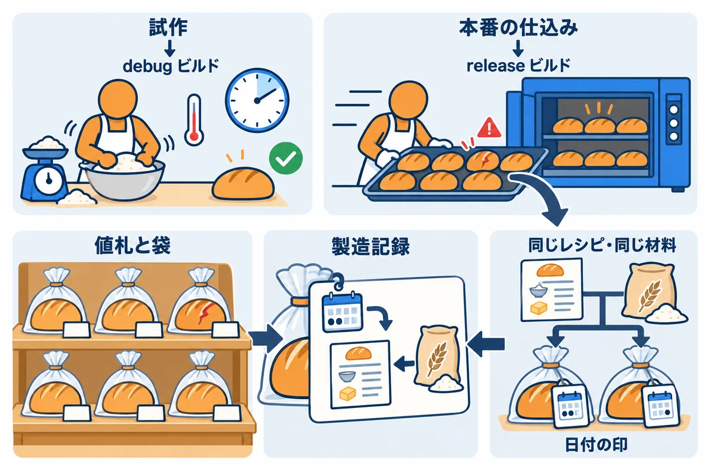
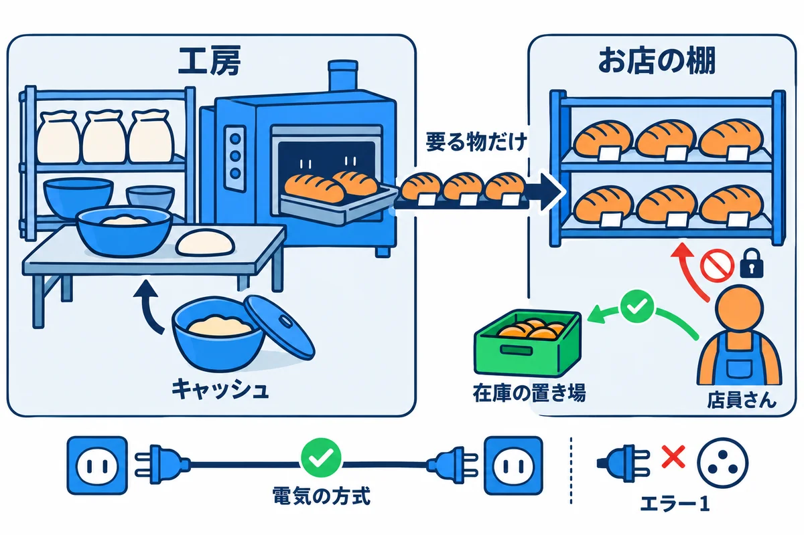
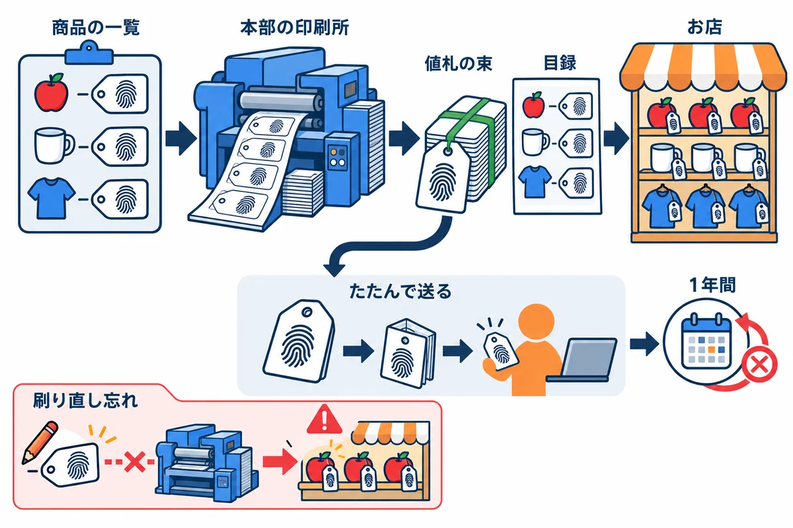
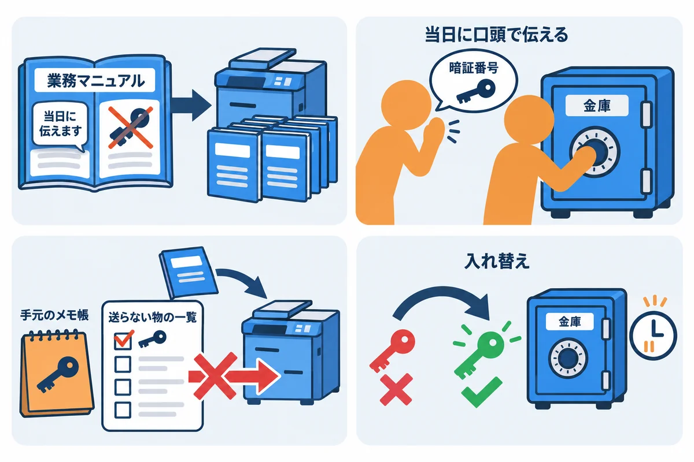
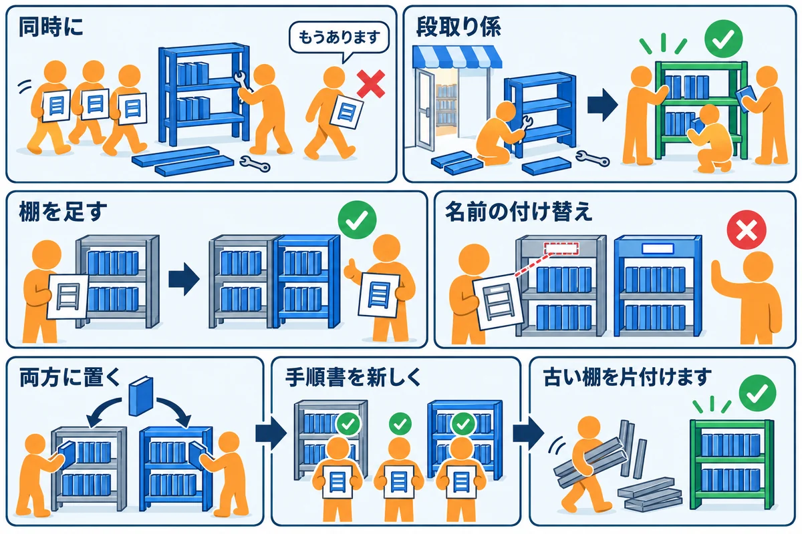

VOLUME 12 / RUST BACKEND MASTERY
Fly.io 公開 — Docker・CI・運用・復旧
本番用の実行ファイルを作るところから、公開・見守り・元に戻すところまでを、手を動かして確かめる
色の付いた枠のコードの、右上の「コピー」ボタンを押してください。コピーしたら、ブラウザーの「戻る」で PDF に戻れます。
第11巻までで、RustNote は自分の PC の中で、正しく動くようになりました。この巻では、それをインターネットに公開し、公開したあとも安全に動かし続ける方法を学びます。
自分の PC で動くことと、公開して動き続けることの間には、思っているより大きな差があります。公開してから、次のような事故が起きることがよくあります。
この巻のテーマは、こうした事故を、作る手順・置く場所・確かめる方法・戻す方法を先に決めておくことで防ぐことです。
この巻を終えると、次のことができるようになります。
fly.toml）と、アプリが待ち受けるアドレス・ポートをそろえ、秘密の値を fly secrets で渡せる| 単元 | テーマ | ひとことで言うと |
|---|---|---|
| UNIT 01 | release ビルドと再現性 | 本番用の実行ファイルを作り、同じソースから同じ物ができるかを確かめる |
| UNIT 02 | multi-stage の Dockerfile | 作る場所と動かす場所を分け、小さく安全なイメージにする |
| UNIT 03 | アセットの束を本番用に作る | topcoat asset bundle --release と、assets/ の置き場所 |
| UNIT 04 | fly launch・fly.toml・ポート | 0.0.0.0:8080 と internal_port をそろえる |
| UNIT 05 | secrets・設定・入れ替え | トークンを、イメージにも fly.toml にも書かない |
| UNIT 06 | health check と起動の順番 | 「動いている」と「受け付けてよい」を外から確かめる |
| UNIT 07 | migration を出す順番と release command | 新しい表と古いコードがぶつからないようにする |
| UNIT 08 | deploy・ログ・動作の確かめ・独自ドメイン | 出したあとに、本当に動いているかを確かめる |
| UNIT 09 | 台数・地域・費用・Turso との距離 | 速さと費用の釣り合いを、数で決める |
| UNIT 10 | rollback・backup・障害からの復旧・更新 | 前の版と前のデータに戻す手順を、先に試しておく |
spawn_blocking で重い計算を別のスレッドに任せること（第5巻 UNIT 07）。UNIT 01 で、パスワードのハッシュの速さを測ります。Cargo.toml・Cargo.lock・rust-toolchain.toml と --locked。この巻の UNIT 01 は、その続きとして読めます。注意: この巻の本文は、教材のフォルダの
Rust/rustnote/のコードと、この巻で実際に動かした結果だけをもとに書いています。RustNote の改善点（第11巻・第13巻で見つけたもの）は、教材のコードでは直さずにそのまま使い、関係する所で、その都度ふれます。
公開の作業は、一度うまくいくと、手順を忘れてしまいがちです。各単元では、次の順番で進めてください。
ヒント: この巻の実行結果には、かかった時間（
1m 25sや20.25msなど）や、ファイルの指紋（SHA-256 の長い英数字）が出てきます。時間は PC の速さで、指紋は作った PC と時刻で変わります。何がなぜ変わるのかは、UNIT 01 で確かめます。
この巻のコードは、すべて次の環境で実際にビルド・実行し、実行結果とエラーメッセージは実際の出力をそのまま載せています（パソコンのユーザー名などを含む部分は ... に置き換えています）。
| 項目 | 版・内容 |
|---|---|
| OS | Windows 11（ARM64）。コマンドは PowerShell を主に、WSL / macOS / Linux は補足で示します |
| Rust | 1.99 以上（Topcoat 0.11 の必要条件）。動作確認は rustc 1.99.1 / cargo 1.99.1（aarch64-pc-windows-msvc） |
| RustNote | 教材の Rust/rustnote/（rustnote 0.1.0）。この巻では src/ を変えずに使う |
| topcoat-cli | 0.11.0（topcoat asset bundle で CSS の束を作る。RustNote の topcoat と同じ版） |
| Docker | 29.3.1（Docker Desktop。中は linux/arm64。UNIT 02 から使います。イメージは rust:1.99.1-trixie と debian:trixie-slim） |
| flyctl | v0.5.1（Fly.io のコマンド。Windows 用の公式の配布は x86_64 版だけで、この PC（ARM64）でも windows/amd64 版が動きます。UNIT 04 から使います。アカウントへのログインはしません） |
第9巻・第13巻と同じように、教材の Rust/rustnote/ を作業用のフォルダにコピーして使います。この巻では、確かめ用の小さなプログラムを examples/ に足していきます。RustNote の src/ は変えません。
# 教材の rustnote フォルダを、中身ごと（-Recurse）作業用のフォルダへコピーする
Copy-Item -Recurse "教材のフォルダ\Rust\rustnote" .\rustnote
cd rustnote
# このフォルダで使われる Rust の版を確かめる（1.99.1 になる）
rustup show active-toolchain
topcoat CLI がまだ入っていなければ、ここで入れておきます。RustNote の Dockerfile と同じ版・同じ書き方です（ダウンロードとコンパイルをするので、数分かかることがあります）。
cargo install topcoat-cli --version 0.11.0 --locked
topcoat --version
topcoat 0.11.0
cargo build --release --locked → topcoat asset bundle --release）を説明し、手元で起動して GET /health を確かめられるCargo.lock から作った実行ファイルかを、記録として残せる
パン屋さんが、新しいパンを売り出すまでを考えます。
RustNote の公開の準備も、同じ形をしています。
| パン屋さん | RustNote |
|---|---|
| 試作（確かめながら、ゆっくり） | debug ビルド（cargo build。あふれの確かめ付き・最適化なし） |
| 本番の仕込み（速く、たくさん） | release ビルド（cargo build --release。最適化あり・あふれの確かめなし） |
| 値札と袋 | アセットの束（topcoat asset bundle --release が作る assets/） |
| 製造記録 | ビルドの記録（コミット・Rust の版・Cargo.lock と実行ファイルの指紋） |
| 袋の日付の印 | 実行ファイルに入るリンクした時刻 |
用語: debug ビルド（デバッグビルド：
cargo buildで作る、試し用の実行ファイル。コンパイルが速く、間違いに気づきやすいが、動きは遅い。target\debugにできる）
用語: release ビルド（リリースビルド：
cargo build --releaseで作る、本番用の実行ファイル。コンパイルに時間をかけて最適化し、速く動く。target\releaseにできる）
用語: 再現性（さいげんせい：同じソース・同じ道具・同じ部品から作れば、いつ誰が作っても同じ物ができること。英語では reproducibility）
同じ RustNote のソースから作った2つの実行ファイルを、この PC で比べると、次のようになりました（数は、この単元の例で実際に測ったものです）。
255 + 1 が 0 になって）動き続けます。release のほうが、間違いに気づきにくいのです（エラー3）。本番用の実行ファイルは、次の順番で作ります。RustNote の Dockerfile も、同じ順番で作っています（UNIT 02）。
target\release\rustnote.exe ができます。--locked で、Cargo.lock のとおりの版を使います（第13巻 UNIT 01）。topcoat asset bundle --release で作ります。topcoat CLI は、中で cargo build --release を動かして実行ファイルを用意し（①で作ってあれば、そのまま使います）、その中から asset!("assets/style.css") の印を探して、CSS を style-e9b983efabcfc6c3.css のような名前（中身から計算した指紋付き）にして、実行ファイルの隣の assets\ に置きます。topcoat CLI の中の cargo build には --locked が付かないので、先に①で、Cargo.lock のとおりの版で作っておきます（くわしくは UNIT 03）。assets\」を読みます。片方だけをコピーすると、起動しません。▼ このコマンドがやること（先に日本語で）:
Cargo.lockのとおりの版で release ビルドを作り、CSS の束を作ってから、できた実行ファイルを起動します。別の PowerShell の窓からGET /healthを送り、{"status":"ok"}が返ることを確かめます。
# ① 本番用にビルドする（Cargo.lock を書き換えない）
cargo build --release --locked
# ② 実行ファイルの隣に、CSS の束を作る
topcoat asset bundle --release
# ③ 起動する（止めるときは Ctrl+C）
.\target\release\rustnote.exe
▼ 実行結果（cargo build は Compiling の行が 289 行続くので、最後の2行だけを載せています。クレートをまだダウンロードしていない PC では、その表示も加わります）
Compiling rustnote v0.1.0 (...\rustnote)
Finished `release` profile [optimized] target(s) in 1m 26s
bundled assets into target\release\assets
マイグレーションを適用しました: 0001_users
マイグレーションを適用しました: 0002_notes
マイグレーションを適用しました: 0003_sessions
RustNote を起動しました: http://127.0.0.1:3000
起動したまま、もう1つの PowerShell の窓で、ヘルスチェックの URL を開きます。curl.exe の -i は、本文の前に、返事の見出し（ヘッダー）も表示する指定です。
curl.exe -i http://127.0.0.1:3000/health
HTTP/1.1 200 OK
content-type: application/json
content-length: 15
date: Fri, 30 Oct 2026 22:19:10 GMT
{"status":"ok"}
target\release にできるFinished release profile [optimized] の optimized は「最適化した」という意味です。debug ビルドのときは Finished dev profile [unoptimized + debuginfo]（最適化なし・デバッグ用の情報付き）と表示されます。target\debug\、release ビルドは target\release\ と、別のフォルダにできます。2つは混ざりません。この PC では、何もない状態からの release ビルドに 1 分 26 秒かかりました。debug ビルドは 1 分 6 秒でした。release は、最適化に時間を使うぶん遅くなります。bundled assets into target\release\assets は、「target\release\assets に束を作りました」です。--release を付けたので、release の実行ファイルの隣にできました。付け忘れると target\debug\assets にできてしまいます（エラー1）。target の前に、フォルダの場所が付きます。rustnote.db）だったので、起動のときに3つのマイグレーションが適用されました。2回目からは、この3行は出ません。DB ファイルは、コマンドを実行したフォルダ（今いるフォルダ）にできます。.env が無いときの DATABASE_URL の既定値が rustnote.db だからです（第13巻 UNIT 01）。GET /health は 200 で {"status":"ok"} を返しました。RustNote の /health は、DB に SELECT 1 を送って、答えが返れば ok です。Fly.io も、公開したあと、この URL で「動いているか」を確かめます（UNIT 06）。▼ このコードがやること（先に日本語で）: RustNote の
auth::hash_password（パスワードを Argon2id でハッシュ化する）とauth::verify_password（照合する）を3回ずつ呼び、それぞれにかかった時間を表示します。同じプログラムを、debug と release の2通りで動かして比べます。
//! RustNote のパスワードのハッシュ化と照合（Argon2id）にかかる時間を、3回ずつ測る。
//! debug と release で比べる:
//! cargo run -q --example u01_hash_speed
//! cargo run -q --release --example u01_hash_speed
use std::time::Instant;
use rustnote::auth::{hash_password, verify_password};
use rustnote::domain::Password;
#[tokio::main]
async fn main() -> anyhow::Result<()> {
// debug ビルドでは debug_assertions が有効、release ビルドでは無効になる
let profile = if cfg!(debug_assertions) {
"debug"
} else {
"release"
};
println!("ビルドの種類: {profile}");
let password = Password::parse("correct horse battery")?;
for n in 1..=3 {
let started = Instant::now();
let phc = hash_password(&password).await?;
let hashed = started.elapsed();
let started = Instant::now();
let matches = verify_password("correct horse battery", &phc).await?;
let verified = started.elapsed();
println!("{n}回目: ハッシュ化 {hashed:.2?}・照合 {verified:.2?}（一致: {matches}）");
}
Ok(())
}
examples/u01_hash_speed.rs として保存し、--release を付けずに1回、付けて1回実行します。
cargo run -q --example u01_hash_speed
cargo run -q --release --example u01_hash_speed
▼ 実行結果
ビルドの種類: debug
1回目: ハッシュ化 401.18ms・照合 445.38ms（一致: true）
2回目: ハッシュ化 409.09ms・照合 412.93ms（一致: true）
3回目: ハッシュ化 396.51ms・照合 409.86ms（一致: true）
ビルドの種類: release
1回目: ハッシュ化 19.66ms・照合 24.79ms（一致: true）
2回目: ハッシュ化 20.01ms・照合 20.61ms（一致: true）
3回目: ハッシュ化 21.73ms・照合 19.39ms（一致: true）
cfg!(debug_assertions) は、debug ビルドでは true、release ビルドでは false になります。debug_assert!（debug のときだけ確かめる assert!）は、この設定で有効・無効が切り替わります。整数のあふれの確かめも、既定では debug で有効・release で無効です（エラー3）。spawn_blocking 用のスレッドを作ったりする分が加わることがあるからだと考えられます。ただし、ハッシュ化のほうは、1回目と2回目以降でほとんど差がありませんでした。速さを比べるときは、1回だけで決めず、何回か測ります。公開した実行ファイルについて、「これは、どのソースから作った物か」を後から確かめられることが大切です。同じソースから作れば、いつでも同じ実行ファイルになるのでしょうか。確かめるための小さな道具を作ります。
▼ このコードがやること（先に日本語で）: 渡された実行ファイル（.exe）を読み、大きさ、リンクした時刻（実行ファイルの見出しに書かれている）、ユーザーフォルダの場所（
C:\Users\あなたの名前の部分）が中に何か所入っているかを表示します。2つ渡すと、中身が何バイト違うかも数えます。外のクレートは使わず、標準ライブラリだけで書きます。
▶ 書く所と動かし方: コピーした rustnote フォルダの examples フォルダに、u01_exe_report.rs という名前の新しいファイルを作り、下のコードを貼り付けて保存します。rustnote のフォルダで cargo run -q --example u01_exe_report -- 1つ目.exe [2つ目.exe] を実行します。
//! Windows の実行ファイル（.exe）を調べて、大きさ・リンクした時刻・ユーザーフォルダの
//! 場所が何か所入っているかを表示する。2つ渡すと、違うバイトの数も数える。
//! 実行: cargo run -q --example u01_exe_report -- 1つ目.exe [2つ目.exe]
use std::env;
use std::fs;
/// PE 形式（Windows の実行ファイルの形式）の見出しから、リンクした時刻を読む。
/// 時刻は「1970-01-01 からの秒数」（UNIX 時刻）で入っている
fn link_time(bytes: &[u8]) -> Option<u32> {
// 先頭から 0x3C の位置に、PE の見出しがどこから始まるかが書いてある
let header: [u8; 4] = bytes.get(0x3C..0x40)?.try_into().ok()?;
let pe = usize::try_from(u32::from_le_bytes(header)).ok()?;
// 見出しは "PE\0\0" で始まり、その 8 バイト後ろに時刻がある
if bytes.get(pe..pe + 4)? != b"PE\0\0" {
return None;
}
let time: [u8; 4] = bytes.get(pe + 8..pe + 12)?.try_into().ok()?;
Some(u32::from_le_bytes(time))
}
/// `needle` が何か所に入っているかを数える
fn count(haystack: &[u8], needle: &[u8]) -> usize {
haystack
.windows(needle.len())
.filter(|window| *window == needle)
.count()
}
fn main() -> std::io::Result<()> {
let paths: Vec<String> = env::args().skip(1).collect();
// ユーザーフォルダの場所（例: C:\Users\taro）。場所そのものは表示しない
let profile = env::var("USERPROFILE").unwrap_or_default();
let mut files = Vec::new();
for path in &paths {
let bytes = fs::read(path)?;
println!("[{path}]");
println!(" 大きさ: {} バイト", bytes.len());
match link_time(&bytes) {
Some(time) => println!(" リンクした時刻（UNIX 秒）: {time}"),
None => println!(" リンクした時刻: 読めません（PE 形式ではない）"),
}
if !profile.is_empty() {
let found = count(&bytes, profile.as_bytes());
println!(" ユーザーフォルダの場所が入っている数: {found} か所");
}
files.push(bytes);
}
if let [first, second] = files.as_slice() {
let same_length = first.len() == second.len();
let differ = first.iter().zip(second).filter(|(a, b)| a != b).count();
println!("--- 2つを比べる");
println!(" 大きさが同じ: {same_length}");
println!(" 違うバイトの数: {differ}");
}
Ok(())
}
▶ ここで初めて出てくるコード
u32::from_le_bytes()（数）: 4 つのバイト（小さい桁から順）から、u32の数を作る関数。実行ファイルの中の決まった場所の数を読む時に使います。
同じソースから、release ビルドを2回作って比べます。2回目は、RustNote の部分だけを消してから作り直します（依存クレートは作り直さないので、1回目より速く終わります）。
# 1回目の実行ファイルを、builds フォルダに取っておく
New-Item -ItemType Directory builds
Copy-Item target\release\rustnote.exe builds\build1.exe
# RustNote の部分だけを消して、作り直す
cargo clean --release -p rustnote
cargo build --release --locked
Copy-Item target\release\rustnote.exe builds\build2.exe
# 2つを比べる
cargo run -q --example u01_exe_report -- builds/build1.exe builds/build2.exe
▼ 実行結果
[builds/build1.exe]
大きさ: 11732480 バイト
リンクした時刻（UNIX 秒）: 1793398680
ユーザーフォルダの場所が入っている数: 1811 か所
[builds/build2.exe]
大きさ: 11732480 バイト
リンクした時刻（UNIX 秒）: 1793398806
ユーザーフォルダの場所が入っている数: 1811 か所
--- 2つを比べる
大きさが同じ: true
違うバイトの数: 24
▶ ここで初めて出てくるコード
cargo clean（cargo のコマンド）: 翻訳でできたファイル（targetフォルダの中）を消すコマンド。--release -p rustnoteで、release の RustNote の分だけを消します。次の翻訳は時間がかかります。
Get-FileHash で表示できる）も、まったく別の値になります。rustnote.pdb）と組み合わせるための識別番号（16 バイト）でした。プログラムの命令の部分は、1 バイトも違いませんでした。link.exe）には、時刻の代わりに中身から計算した値を使う /Brepro という指定があります。Rust から渡すには、環境変数 RUSTFLAGS を使います。RUSTFLAGS を変えると、全部のクレートが作り直しになるので、別の --target-dir で試します。$env:RUSTFLAGS = "-C link-arg=/Brepro"
cargo build --release --locked --target-dir target\brepro
Copy-Item target\brepro\release\rustnote.exe builds\brepro1.exe
cargo clean --release -p rustnote --target-dir target\brepro
cargo build --release --locked --target-dir target\brepro
Copy-Item target\brepro\release\rustnote.exe builds\brepro2.exe
# 試し終わったら、環境変数を消す
Remove-Item Env:RUSTFLAGS
cargo run -q --example u01_exe_report -- builds/brepro1.exe builds/brepro2.exe
[builds/brepro1.exe]
大きさ: 11731968 バイト
リンクした時刻（UNIX 秒）: 2520511643
ユーザーフォルダの場所が入っている数: 1811 か所
[builds/brepro2.exe]
大きさ: 11731968 バイト
リンクした時刻（UNIX 秒）: 2520511643
ユーザーフォルダの場所が入っている数: 1811 か所
--- 2つを比べる
大きさが同じ: true
違うバイトの数: 0
C:\Users\あなたの名前\.cargo\registry\... など）が、実行ファイルの中に文字として残っているのです。この実行ファイルを人に渡すと、あなたのユーザー名も一緒に渡ることになります。--remap-path-prefix を使うと、実行ファイルに入れる場所の文字を、別の文字に置き換えられます。$env:RUSTFLAGS = "-C link-arg=/Brepro --remap-path-prefix=$env:USERPROFILE=~"
cargo build --release --locked --target-dir target\remap
Copy-Item target\remap\release\rustnote.exe builds\remap.exe
Remove-Item Env:RUSTFLAGS
cargo run -q --example u01_exe_report -- builds/remap.exe
[builds/remap.exe]
大きさ: 11708416 バイト
リンクした時刻（UNIX 秒）: 2255404590
ユーザーフォルダの場所が入っている数: 1 か所
asset! マクロは、assets/style.css のような場所を、あとで topcoat CLI が見つけられるように、クレートのフォルダの場所（CARGO_MANIFEST_DIR）を実行ファイルに書き込みます（topcoat-asset 0.11.0 の asset! のソースで確かめました）。これは、アセットの束を作るために必要な情報です。Dockerfile が、rust:1.99.1-trixie のイメージの中の /app フォルダでビルドしているのは、このためです（UNIT 02）。release ビルドを作った直後に、topcoat asset bundle --release をせずに起動した場合です。--release を付けずに topcoat asset bundle だけを実行した場合も、同じエラーになります（束が target\debug\assets にできて、release の実行ファイルの隣には無いからです）。
topcoat asset bundle
.\target\release\rustnote.exe
bundled assets into target\debug\assets
Error: アセットの束（assets/）がありません。先に `topcoat asset bundle` を実行するか、`topcoat dev` で起動してください
Caused by:
no asset bundle at target\release\assets
（終了コード: 1）
（このあとのフォルダの中: ）
Error: の行は、RustNote の main.rs が anyhow の context で付けた説明です。Caused by: の下の no asset bundle at target\release\assets が、Topcoat の AssetBundle::load() が返した、もとの原因です。実行ファイルの隣（target\release\assets）に束がありませんでした。main.rs は、アセットを読み込んでから DB を開きます。だから、このエラーのときは、rustnote.db も作られていません。準備に失敗するものを、先に確かめているのです（第9巻 UNIT 06）。topcoat asset bundle --release を実行してから、もう一度起動します。topcoat asset bundle を実行するか」と案内していますが、release の実行ファイルのときは --release も必要です。「release のときは --release を付ける」まで書いておくと、迷う人が減ります（RustNote のコードは変えていません）。RustNote が動いているのに、別の窓から、もう1つ起動した場合です。
.\target\release\rustnote.exe
RustNote を起動しました: http://127.0.0.1:3000
Error: サーバーを起動できませんでした（HOST / PORT を確認してください）
Caused by:
通常、各ソケット アドレスに対してプロトコル、ネットワーク アドレス、またはポートのどれか 1 つのみを使用できます。 (os error 10048)
（終了コード: 1）
通常、各ソケット アドレスに対して…1 つのみを使用できます。(os error 10048) は、Windows の「そのアドレスとポート（127.0.0.1:3000）は、もうほかのプログラムが使っています」というエラーです。Linux では Address already in use (os error 98) のような文になります。$env:PORT = "3001" のように、別のポートを指定してから起動します（topcoat::start は HOST と PORT の環境変数を読みます）。RustNote を起動しました: http://127.0.0.1:3000 と出ています。ところが、このプログラムは起動できずに止まりました。RustNote の main.rs は、ポートを押さえる（topcoat::start）前に「起動しました」を表示しているからです。ログを見る人が「起動した」と勘違いしないよう、ポートを押さえたあとに表示するのが本来の形です。これも、RustNote に残っている改善点です（教材のコードは変えていません。直し方は、第13巻の総合演習2で確かめています）。u8（0〜255 の整数）の 255 に 1 を足す、小さなプログラムです（examples/u01_overflow.rs）。
//! 整数のあふれ（オーバーフロー）が、debug と release でどう違うかを確かめる。
//! cargo run -q --example u01_overflow
//! cargo run -q --release --example u01_overflow
use std::hint::black_box;
fn main() {
// black_box は、コンパイラに値を先に計算させないための箱（実行してから値が決まる、という扱いにする）
let count: u8 = black_box(255);
println!("count = {count}");
let next = count + 1;
println!("count + 1 = {next}");
}
cargo run -q --example u01_overflow
cargo run -q --release --example u01_overflow
count = 255
thread 'main' (6484) panicked at examples\u01_overflow.rs:11:16:
attempt to add with overflow
note: run with `RUST_BACKTRACE=1` environment variable to display a backtrace
count = 255
count + 1 = 0
attempt to add with overflow（足し算であふれようとしました）の panic で止まりました。release では、何も言わずに 0 になりました。u8 の 256 は表せないので、0 に折り返したのです。black_box を使っているのは、255 + 1 のように、コンパイルのときに答えが分かる式だと、コンパイラーが先にエラーにしてしまうからです。実際のプログラムでは、値はフォームや DB から来るので、コンパイラーは気づけません。checked_add（あふれたら None）や、大きい型（u64）で計算することです（問2）。もう1つは、Cargo.toml に次の設定を書いて、release でもあふれを確かめるようにすることです。少し遅くなるかわりに、debug と同じく panic で止まります。[profile.release]
overflow-checks = true
この設定は、Cargo.toml を書き換えずに、環境変数 CARGO_PROFILE_RELEASE_OVERFLOW_CHECKS=true で試すこともできます。試すと、release でも debug と同じ panic になりました。
count = 255
thread 'main' (43852) panicked at examples\u01_overflow.rs:11:16:
attempt to add with overflow
note: run with `RUST_BACKTRACE=1` environment variable to display a backtrace
RustNote の Dockerfile の「1. builder」の部分は、この単元の手順を、そのまま並べた形です（抜き出しています）。
# builder と実行用は、同じ Debian 13（trixie）にそろえる（実行ファイルが使う glibc の版を合わせるため）
FROM rust:1.99.1-trixie AS builder
WORKDIR /app
# アセットの束を作る topcoat CLI（アプリの Topcoat と同じ 0.11.0）
RUN cargo install topcoat-cli --version 0.11.0 --locked
# ソースをコピーしてビルドする（Cargo.lock の版をそのまま使う）
COPY . .
RUN cargo build --release --locked
# 実行ファイルの隣（target/release/assets/）に CSS の束を作る
RUN topcoat asset bundle --release
/app）が、いつも同じです。例1-3で見た「作る場所が中身に入り込む」問題が、毎回同じ形になります。cargo build --release --locked → topcoat asset bundle --release の順番も、例1-1と同じです。整数のあふれについても、RustNote は気をつけて書いてあります。src/domain.rs の NoteQuery です（抜き出しています）。
page: page.unwrap_or(1).max(1),
pub fn offset(&self) -> u64 {
u64::from(self.page - 1) * u64::from(PER_PAGE)
}
page.unwrap_or(1).max(1) で、ページ番号を必ず 1 以上にしています。だから self.page - 1 が 0 より小さくなる（u32 で引き算があふれる）ことはありません。?page=0 が来ても、1 ページ目として扱います。offset）は、u32 のままではなく u64 に広げてから掛けています。u32 の最大値どうしを掛けても、u64 ならあふれません。なぜこう書くのかは、問2で確かめます。問1: release ビルドの rustnote.exe だけを、別のフォルダ（たとえば dist）にコピーして起動すると、どうなるでしょうか。予想してから確かめてください。そのあと、そのフォルダで RustNote を起動できるようにするには、何をコピーすればよいでしょうか。起動できたら、DB ファイルはどこにできたかも確かめてください。
問2: もし NoteQuery::offset を u64 に広げずに、u32 のまま (self.page - 1) * PER_PAGE と書いていたら、URL に ?page=214748366 を付けて開いたとき、debug と release でそれぞれどうなるでしょうか。小さなプログラムで確かめてください。
問3: 公開した実行ファイルについて、「どのコミット・どの Rust・どの Cargo.lock から作ったか」を後から確かめられるように、PowerShell で記録のファイル（release-record.txt）を作ってください。練習用のフォルダを Git で管理している（git init してコミットしてある）ものとします。
問1の解答:
予想: 起動しない。実行ファイルは「自分の隣の assets\」を読むのに、dist には assets\ が無いからです。
New-Item -ItemType Directory dist
Copy-Item target\release\rustnote.exe dist\
cd dist
.\rustnote.exe
▶ ここで初めて出てくるコード
.\rustnote.exe（PowerShell）: 今いるフォルダのrustnote.exeを動かす書き方。
Error: アセットの束（assets/）がありません。先に `topcoat asset bundle` を実行するか、`topcoat dev` で起動してください
Caused by:
no asset bundle at ...\dist\assets
（終了コード: 1）
dist\assets）を探しました。target\release\assets があっても、使われません。target\release\assets を、フォルダごと dist にコピーすると起動できます。Copy-Item -Recurse ..\target\release\assets .\assets のあと、もう一度起動して /health を開くと、{"status":"ok"} が返りました。マイグレーションを適用しました: 0001_users
マイグレーションを適用しました: 0002_notes
マイグレーションを適用しました: 0003_sessions
RustNote を起動しました: http://127.0.0.1:3000
（/health: {"status":"ok"}）
（dist の中: assets rustnote.db rustnote.exe ）
dist には、rustnote.exe・assets・rustnote.db の3つがありました。DB ファイルは、今いるフォルダ（dist）にできます。アセットは「実行ファイルの隣」、DB は「今いるフォルダ」と、探す場所の決まりが違うことに注意してください。本番では、DB の場所を DATABASE_URL で決めておきます（RustNote の Dockerfile は /data/rustnote.db）。問2の解答:
examples/u01_q2.rs です。RustNote と同じ u64 の計算と、checked_mul、u32 のままのふつうの * を並べます。
//! 問2の解答: ページ番号から「何件飛ばすか」（offset）を計算するとき、
//! u32 のままだとあふれる。RustNote の NoteQuery::offset と比べる。
//! cargo run -q --example u01_q2
//! cargo run -q --release --example u01_q2
use std::hint::black_box;
const PER_PAGE: u32 = 20;
fn main() {
// URL の ?page=214748366 から来たページ番号
let page: u32 = black_box(214_748_366);
// RustNote と同じ: u64 に広げてから掛ける（u32 の最大値どうしを掛けてもあふれない）
let wide = u64::from(page - 1) * u64::from(PER_PAGE);
println!("u64 に広げて計算: {wide}");
// checked_mul は、あふれたら None を返す
println!(
"u32 のまま checked_mul: {:?}",
(page - 1).checked_mul(PER_PAGE)
);
// u32 のまま、ふつうの * で掛ける
let narrow = (page - 1) * PER_PAGE;
println!("u32 のまま *: {narrow}");
}
cargo run -q --example u01_q2
cargo run -q --release --example u01_q2
u64 に広げて計算: 4294967300
u32 のまま checked_mul: None
thread 'main' (219748) panicked at examples\u01_q2.rs:25:18:
attempt to multiply with overflow
note: run with `RUST_BACKTRACE=1` environment variable to display a backtrace
u64 に広げて計算: 4294967300
u32 のまま checked_mul: None
u32 のまま *: 4
u64 の結果）です。これは u32 の最大値（4,294,967,295）を少しだけ超えます。4 になりました。4,294,967,300 から 4,294,967,296 を引いた余りです。つまり、とても大きなページ番号を付けただけで、5 件目からのノートが表示されてしまうのです。エラーにもならないので、気づくのはとても難しくなります。checked_mul は、あふれるときに None を返すので、「あふれた」ことをプログラムで扱えます。RustNote のように、はじめから大きな型で計算するのも、確実な方法です。問3の解答:
$exe = "target\release\rustnote.exe"
@(
"commit: $(git rev-parse --short HEAD)"
"rustc: $(rustc --version)"
"Cargo.lock: $((Get-FileHash Cargo.lock).Hash)"
"rustnote: $((Get-FileHash $exe).Hash)"
"built at: $((Get-Item $exe).LastWriteTimeUtc.ToString('u'))"
) | Set-Content -Encoding utf8 release-record.txt
Get-Content release-record.txt
commit: 6b40498
rustc: rustc 1.99.1 (58cf8f9c3 2026-10-13)
Cargo.lock: FC84B1A4DFA47B85BD2C49F52BF522EBDC3E0B948846FA2862050904E9B000E0
rustnote: 36E406CFEF0D4AC42BB6D25F2007C6A05860BDBF875CE0E2C8C2CEB2F0CD9C1E
built at: 2026-10-30 22:20:06Z
git rev-parse --short HEAD は、今のコミットの短い名前です。rustc --version は、このフォルダで使われる Rust の版（rust-toolchain.toml の 1.99.1）です。Get-FileHash は、ファイルの SHA-256 の指紋を計算します。built at は、実行ファイルを最後に書き換えた時刻（UTC）です。この例では、例1-3で調べた2回目のビルドの「リンクした時刻」（1793398806 秒）と同じ、2026-10-30 22:20:06（UTC）になりました。Cargo.lock で作った物」とたどれます。/Brepro などで再現できるように作ってあれば、同じコミットからもう一度作って、rustnote の指紋が一致するかで確かめることもできます。checked_* で計算するか、overflow-checks = true を設定する。cargo build --release --locked → topcoat asset bundle --release の順で作り、実行ファイルと assets\ を必ず一緒に置く。実行ファイルは「自分の隣の assets\」を、DB は「今いるフォルダ」（または DATABASE_URL）を使う。Cargo.lock・実行ファイルの指紋を記録しておく。Dockerfile の2つの段（作る段と動かす段）が、それぞれ何を入れ、何を入れないかを、本物のビルドと docker history で説明できるCOPY --from の場所・/data の持ち主）を守らないと何が起きるかを、エラーで確かめられる
パン屋さんの、工房とお店の棚を考えます。
app）は、棚の商品（/app）を作り替えることはできず、在庫の置き場（/data）だけを使います。| パン屋さん | RustNote の Dockerfile |
|---|---|
| 工房 | FROM rust:1.99.1-trixie AS builder（Rust と topcoat CLI が入った大きな段） |
| 焼き上がったパンと値札 | 実行ファイル rustnote と、CSS の束 assets/ |
| お店の棚 | FROM debian:trixie-slim（小さな Debian の段） |
| 工房から棚へ運ぶ | COPY --from=builder …（要る物だけを運ぶ） |
| 店員さん | 利用者 app（uid 10001。root ではない） |
| 在庫の置き場 | /data（DB のファイルを置く、app が書ける唯一の場所） |
| 電気の方式をそろえる | builder と実行用を、同じ Debian 13（trixie）にする |
用語: multi-stage ビルド（マルチステージ・ビルド：1つの Dockerfile に
FROMを2つ以上書き、前の段で作った物の中から、要る物だけを次の段へCOPY --fromで運ぶ作り方）
用語: レイヤー（Docker のイメージを作る1つ1つの段の結果。
RUN・COPYごとに1つでき、同じ手順・同じ材料なら、前のビルドの結果（キャッシュ）を使い回す）
用語: glibc（ジー・リブ・シー：Linux の C の基本のライブラリ。Rust の実行ファイルも、ふつうはこれを使う。新しい glibc で作った実行ファイルは、古い glibc の上では動かないことがある）
教材の Dockerfile の2つの段と、それぞれに入る物です（例2-1・例2-2の結果）。
ソースを1行変えたとき、どの段がやり直しになるかです（例2-3の結果）。
▼ このファイルがやること（先に日本語で）: builder の段で、Rust 1.99.1 の入った Debian 13 のイメージに topcoat CLI を入れ、ソースをコピーして release ビルドとアセットの束を作ります。実行用の段では、小さな Debian に証明書と利用者
appと/dataを用意し、builder の段から実行ファイルとassets/だけをコピーして、0.0.0.0:8080で動かします。
# RustNote のコンテナイメージ（Fly.io で動かす）
#
# 2 段階（multi-stage）ビルド:
# 1. builder … Rust と topcoat CLI でアプリをビルドし、CSS の束（assets/）を作る
# 2. 実行用 … 小さな Debian に、実行ファイルと assets/ だけをコピーする
#
# ビルド: docker build -t rustnote .
# 実行: docker run --rm -p 8080:8080 rustnote
# ---- 1. builder ----
# builder と実行用は、同じ Debian 13（trixie）にそろえる（実行ファイルが使う glibc の版を合わせるため）
FROM rust:1.99.1-trixie AS builder
WORKDIR /app
# アセットの束を作る topcoat CLI（アプリの Topcoat と同じ 0.11.0）
RUN cargo install topcoat-cli --version 0.11.0 --locked
# ソースをコピーしてビルドする（Cargo.lock の版をそのまま使う）
COPY . .
RUN cargo build --release --locked
# 実行ファイルの隣（target/release/assets/）に CSS の束を作る
RUN topcoat asset bundle --release
# ---- 2. 実行用 ----
FROM debian:trixie-slim
# Turso へ HTTPS でつなぐための証明書
RUN apt-get update \
&& apt-get install -y --no-install-recommends ca-certificates \
&& rm -rf /var/lib/apt/lists/*
# root ではない利用者で動かす。/data はローカルの DB ファイル置き場
RUN useradd --create-home --uid 10001 app \
&& mkdir -p /data \
&& chown app:app /data
WORKDIR /app
# AssetBundle::load() は「実行ファイルの隣の assets/」を読むので、同じ並びでコピーする
COPY --from=builder /app/target/release/rustnote /app/rustnote
COPY --from=builder /app/target/release/assets /app/assets
USER app
# 0.0.0.0:8080 で待ち受ける（fly.toml の internal_port と合わせる）
ENV HOST=0.0.0.0 \
PORT=8080 \
DATABASE_URL=/data/rustnote.db
EXPOSE 8080
CMD ["/app/rustnote"]
教材のフォルダの中身（.dockerignore も含む）をコピーしたフォルダで、ビルドしました。
docker build --progress=plain -t rustnote:u02 .
▶ ここで初めて出てくるコード
docker build（Docker）:Dockerfile（箱の作り方を書いたファイル）から、イメージ（箱の設計図）を作るコマンド。-t 名前:タグで名前を付けます。最後の.は「今のフォルダの中身を使う」という意味です。
Docker 29.3.1（linux/arm64）
#1 [internal] load build definition from Dockerfile
#1 DONE 0.0s
#2 [internal] load metadata for docker.io/library/debian:trixie-slim
#2 DONE 0.2s
#3 [internal] load metadata for docker.io/library/rust:1.99.1-trixie
#3 DONE 0.2s
#4 [internal] load .dockerignore
#4 transferring context: 143B done
#4 DONE 0.0s
#5 [internal] load build context
#5 DONE 0.0s
#6 [stage-1 1/6] FROM docker.io/library/debian:trixie-slim@sha256:f6b08b09a05725f9431502d3b5714f5c4576e82c1a84fa1debe0c24a7e0c3ec4
#6 DONE 0.1s
#7 [builder 1/6] FROM docker.io/library/rust:1.99.1-trixie@sha256:09027f873d45b8ecd1dc86f1fa13b7a62b875c961f017a0e331267b350430137
#7 DONE 0.1s
#5 transferring context: 244.18kB 0.0s done
#5 DONE 0.1s
#8 [builder 2/6] WORKDIR /app
#8 CACHED
#9 [builder 3/6] RUN cargo install topcoat-cli --version 0.11.0 --locked
#9 CACHED
#10 [builder 4/6] COPY . .
#10 DONE 0.0s
#11 [builder 5/6] RUN cargo build --release --locked
#11 DONE 86.8s
#12 [builder 6/6] RUN topcoat asset bundle --release
#12 DONE 1.1s
#13 [stage-1 5/6] COPY --from=builder /app/target/release/rustnote /app/rustnote
#13 CACHED
#14 [stage-1 2/6] RUN apt-get update && apt-get install -y --no-install-recommends ca-certificates && rm -rf /var/lib/apt/lists/*
#14 CACHED
#15 [stage-1 3/6] RUN useradd --create-home --uid 10001 app && mkdir -p /data && chown app:app /data
#15 CACHED
#16 [stage-1 4/6] WORKDIR /app
#16 CACHED
#17 [stage-1 6/6] COPY --from=builder /app/target/release/assets /app/assets
#17 CACHED
#18 DONE 0.2s
[builder 3/6] は builder の段の3つ目の手順、[stage-1 2/6] は実行用の段（名前を付けていないので stage-1）の2つ目の手順です。2つの段は、互いに待たなくてよい所は、同時に進みます。実行用の段の COPY --from=builder だけは、builder の段が終わるのを待ちます。CACHED は、前のビルド（第13巻 UNIT 10）の結果を、そのまま使ったという意味です。この PC では、cargo install topcoat-cli も、実行用の段の準備も、前に作ってあったので、やり直したのは COPY . . からあとだけでした。cargo build --release --locked は 86.8 秒でした。そのあとの COPY --from=builder … /app/rustnote まで CACHED だったのは、できた実行ファイルが、前のビルドと1バイトも違わなかったからです（UNIT 01 で見た再現性。Docker の中では、作る場所と道具がいつも同じ）。docker history で、できたイメージのレイヤーと大きさを、上（新しい）から並べました。
docker history rustnote:u02 --format "{{.Size}}`t{{.CreatedBy}}"
▶ ここで初めて出てくるコード
docker history（Docker）: イメージが、どの手順で、どれだけの大きさを使って作られたかを表示するコマンド。
0B CMD ["/app/rustnote"]
0B EXPOSE [8080/tcp]
0B ENV HOST=0.0.0.0 PORT=8080 DATABASE_URL=/dat…
0B USER app
24.6kB COPY /app/target/release/assets /app/assets …
17.1MB COPY /app/target/release/rustnote /app/rustn…
8.19kB WORKDIR /app
73.7kB RUN /bin/sh -c useradd --create-home --uid 1…
4.66MB RUN /bin/sh -c apt-get update && apt-get…
110MB # debian.sh --arch 'arm64' out/ 'trixie' '@1…
rustnote:u02 の大きさ: 170MB
rust:1.99.1-trixie の大きさ: 2.22GB
debian:trixie-slim の大きさ: 142MB
docker image ls の 170MB と、docker history の合計が少し違うのは、数え方（圧縮・メタデータ）の違いです。イメージの中で、だれとして動き、どこに書けるかを確かめました。
docker run --rm rustnote:u02 sh -c 'id; ls -la /app /data; touch /app/x; touch /data/x && echo "/data に書けた"'
uid=10001(app) gid=10001(app) groups=10001(app)
/app:
total 16752
drwxr-xr-x 1 root root 4096 Oct 30 21:40 .
drwxr-xr-x 1 root root 4096 Oct 30 22:30 ..
drwxr-xr-x 2 root root 4096 Oct 30 21:40 assets
-rwxr-xr-x 1 root root 17140968 Oct 30 21:40 rustnote
/data:
total 8
drwxr-xr-x 2 app app 4096 Oct 30 21:37 .
drwxr-xr-x 1 root root 4096 Oct 30 22:30 ..
touch: cannot touch '/app/x': Permission denied
/data に書けた
app（uid 10001）です。/app の中（実行ファイルと assets）は root の物なので、app は書き換えられません（Permission denied）。書けるのは、chown app:app した /data だけです。比べるために、作る道具ごとそのまま動かす、1段だけの Dockerfile を書いて、ビルドしました。
# 比べるための、1段だけの Dockerfile（作る道具ごと、そのまま動かす）
FROM rust:1.99.1-trixie
WORKDIR /app
RUN cargo install topcoat-cli --version 0.11.0 --locked
COPY . .
RUN cargo build --release --locked && topcoat asset bundle --release
ENV HOST=0.0.0.0 PORT=8080 DATABASE_URL=/app/rustnote.db
CMD ["/app/target/release/rustnote"]
rustnote:single の大きさ: 3.98GB
uid=0(root) gid=0(root) groups=0(root)
/usr/local/cargo/bin/cargo
/usr/local/cargo/bin/rustc
Cargo.lock
Cargo.toml
Dockerfile
assets
migrations
rust-toolchain.toml
rustfmt.toml
src
target
tests
target/ の途中の成果物まで、全部入っているからです。Fly.io に送るたび、起動するたびに、この大きさを運ぶことになります。cargo と rustc が入ったまま、/app にはソース・tests・target が残っています。万一、中に入り込まれたら、その場でプログラムを作って動かせてしまいます。src/routes/health.rs の最後に、コメントを1行足して、教材の Dockerfile でビルドし直しました。
#8 [builder 2/6] WORKDIR /app
#8 CACHED
#9 [builder 3/6] RUN cargo install topcoat-cli --version 0.11.0 --locked
#9 CACHED
#10 [builder 4/6] COPY . .
#10 DONE 0.3s
#11 [builder 5/6] RUN cargo build --release --locked
#11 DONE 101.1s
#12 [builder 6/6] RUN topcoat asset bundle --release
#12 DONE 2.6s
COPY . . より前（WORKDIR・cargo install topcoat-cli）は CACHED でした。COPY . . で材料が変わったので、そのあとの cargo build は、依存クレートを含めて全部やり直しになり、101.1 秒かかりました（Compiling の行が 286 行）。cargo build は、レイヤーの中で、まっさらな target/ から始まるからです。手元の PC の cargo build なら、変わった RustNote の部分だけをコンパイルし直すので、数秒で終わります。info: downloading 2 components という行もありました。rust-toolchain.toml の components = ["rustfmt", "clippy"] のため、イメージに入っていない rustfmt と clippy を、ビルドのたびに取りに行っているのです。実行ファイルを作るだけなら要らない物です（改善点）。小さなイメージとしてよく使われる alpine を、実行用の段に使ってみました（alpine には useradd が無いので、利用者を作る行も alpine の書き方に直しました）。
--- a/Dockerfile
+++ b/Dockerfile
@@ -23,15 +23,13 @@
RUN topcoat asset bundle --release
# ---- 2. 実行用 ----
-FROM debian:trixie-slim
+FROM alpine:3.22
# Turso へ HTTPS でつなぐための証明書
-RUN apt-get update \
- && apt-get install -y --no-install-recommends ca-certificates \
- && rm -rf /var/lib/apt/lists/*
+RUN apk add --no-cache ca-certificates
# root ではない利用者で動かす。/data はローカルの DB ファイル置き場
-RUN useradd --create-home --uid 10001 app \
+RUN adduser -D -u 10001 app \
&& mkdir -p /data \
&& chown app:app /data
exec /app/rustnote: no such file or directory
（終了コード: 255）
exec /app/rustnote: no such file or directory（そのファイルがありません）で止まりました。ところが、ファイルはあります。-rwxr-xr-x 1 root root 17140968 Oct 30 23:02 /app/rustnote
ls: /lib/ld-linux-aarch64.so.1: No such file or directory
/lib/ld-musl-aarch64.so.1
/app/rustnote にあります。無いのは、実行ファイルを読み込むための道具（glibc の ld-linux-aarch64.so.1）です。alpine は glibc ではなく musl という別の C のライブラリを使うので、glibc 向けに作った RustNote の実行ファイルは動きません。「ファイルが無い」という文は、実行ファイルそのものではなく、それを読み込む道具が無いという意味でした。debian:trixie-slim）にします。どうしても alpine にしたいなら、builder の段も musl 向け（この PC の Docker なら aarch64-unknown-linux-musl のターゲット）で作ります。比べるために、実行用の段だけを1つ古い Debian 12（debian:bookworm-slim。glibc 2.36）にしたイメージも作りました。
実行用の段: ldd (Debian GLIBC 2.36-9+deb12u14) 2.36
/health: {"status":"ok"}
--- ログ
マイグレーションを適用しました: 0001_users
マイグレーションを適用しました: 0002_notes
マイグレーションを適用しました: 0003_sessions
RustNote を起動しました: http://0.0.0.0:8080
GLIBC_2.38 not found のようなエラーで止まることがあります。だから、builder と実行用は、同じ版にそろえておきます（Dockerfile の先頭のコメントのとおり）。COPY --from の場所を間違えた実行用の段の COPY --from=builder /app/target/release/rustnote を、/app/target/rustnote（release が抜けた）にしてビルドしました。
#16 ERROR: failed to calculate checksum of ref dh3liq5heezeb2pggtmsep689::pegkidym1va49ix7l4gdsfjk1: "/app/target/rustnote": not found
ERROR: failed to build: failed to solve: failed to compute cache key: failed to calculate checksum of ref dh3liq5heezeb2pggtmsep689::pegkidym1va49ix7l4gdsfjk1: "/app/target/rustnote": not found
/app/target/rustnote が見つかりません（not found）」と止まりました。builder の段の中に、その場所のファイルが無いからです。failed to calculate checksum of ref … は、Docker がコピーする物の指紋を計算しようとして、物が無かった、という意味です。止まるのはビルドのときなので、壊れたイメージが公開されることはありません。CI の docker build で、毎回確かめられます。target/release/）。/data を作らずに、root でない利用者で動かした実行用の段の RUN useradd … && mkdir -p /data && chown app:app /data から、/data を作る部分を消してビルドし、起動しました。
Error: DB（/data/rustnote.db）を開けませんでした
Caused by:
Failed to connect to database: `Unable to open connection to local database /data/rustnote.db: 14`
（終了コード: 1）
14 は、SQLite の「ファイルを開けません（SQLITE_CANTOPEN）」の番号です。/data が無いので、DB のファイルを作る場所がありません。root なら / の下に作れるかもしれませんが、利用者 app には書く権限がありません。最小権限にしたので、書ける場所を、こちらで用意する必要があるのです。mkdir -p /data && chown app:app /data で、app が書けるフォルダを用意します。Fly.io で volume を使うときも、同じ /data に付けます。本番の RustNote は Turso を使うので、/data は使いません（UNIT 05・09）。ci.yml の docker のジョブは、テストが通ったあとに docker build -t rustnote Rust/rustnote をします。Dockerfile が壊れていないか（エラー2のような書き間違い）を、毎回確かめられます（第13巻 UNIT 10）。fly deploy は、fly.toml の [build] dockerfile = "Dockerfile" で、この Dockerfile からイメージを作って公開します（UNIT 04・08）。rust-toolchain.toml の components のため、ビルドのたびに rustfmt と clippy をダウンロードしています。問1: 教材の Dockerfile で、RUN cargo install topcoat-cli … を COPY . . より前に書いているのは、なぜでしょうか。例2-3の記録から考えてください。
問2: ソースを1行変えたときのビルドを短くするために、cargo build の target/ を、ビルドをまたいで取っておく（キャッシュのマウント）ように、Dockerfile を直してください。直す前と後で、時間を比べます。
問3: 例2-1で、/app に書けず、/data には書けました。もし実行用の段で USER app を書き忘れると、どうなるでしょうか。
問1の解答:
cargo install topcoat-cli は、ソースと関係が無く、数分かかる手順です（第13巻 UNIT 10 の最初のビルドでは 98 秒）。COPY . . より前に置くと、ソースを変えても CACHED のままです（例2-3）。もし COPY . . のあとに置いていたら、ソースを1行変えるたびに、topcoat CLI のインストールからやり直しになります。問2の解答:
cargo build の RUN に、ダウンロードしたクレートの置き場（/usr/local/cargo/registry）と target/ を、キャッシュのマウント（--mount=type=cache）として付けました。マウントした所はイメージに残らないので、できた実行ファイルと assets/ は、同じ RUN の中で /out にコピーし、実行用の段は /out から運びます。id= は、ほかのプロジェクトのキャッシュと混ざらないための名前です。
--- a/Dockerfile
+++ b/Dockerfile
@@ -17,10 +17,15 @@
# ソースをコピーしてビルドする（Cargo.lock の版をそのまま使う）
COPY . .
-RUN cargo build --release --locked
-
-# 実行ファイルの隣（target/release/assets/）に CSS の束を作る
-RUN topcoat asset bundle --release
+# ダウンロードしたクレートと target/ を、ビルドをまたいで取っておく（キャッシュのマウント）。
+# マウントした所はイメージに残らないので、できた物は /out にコピーしておく
+RUN --mount=type=cache,id=rustnote-registry,target=/usr/local/cargo/registry \
+ --mount=type=cache,id=rustnote-target,target=/app/target \
+ cargo build --release --locked \
+ && topcoat asset bundle --release \
+ && mkdir -p /out \
+ && cp target/release/rustnote /out/rustnote \
+ && cp -r target/release/assets /out/assets
# ---- 2. 実行用 ----
FROM debian:trixie-slim
@@ -37,8 +42,8 @@
WORKDIR /app
# AssetBundle::load() は「実行ファイルの隣の assets/」を読むので、同じ並びでコピーする
-COPY --from=builder /app/target/release/rustnote /app/rustnote
-COPY --from=builder /app/target/release/assets /app/assets
+COPY --from=builder /out/rustnote /app/rustnote
+COPY --from=builder /out/assets /app/assets
USER app
#11 [builder 5/5] RUN --mount=type=cache,id=rustnote-registry,target=/usr/local/cargo/registry --mount=type=cache,id=rustnote-target,target=/app/target cargo build --release --locked && topcoat asset bundle --release && mkdir -p /out && cp target/release/rustnote /out/rustnote && cp -r target/release/assets /out/assets
ソースを1行変えて、もう一度ビルドしました。
rustnote:cache2 の大きさ: 170MB
/health: {"status":"ok"}
cargo build の段が 95.0 秒（依存クレートを含めて全部）でした。ソースを1行変えた2回目は 14.1 秒で、コンパイルしたのは RustNote の1つだけ（Compiling の行が1行）でした。ビルド全体も 100 秒 → 24 秒です。/health も 200 でした。キャッシュのマウントは、イメージの中身を変えずに、作る時間だけを短くします。cargo-chef などの道具を使う）方法があります。問3の解答:
/app の実行ファイルも、/etc の中も、RustNote のプロセスから書き換えられる状態になります。USER app は、RustNote の動きには何の影響も無い1行ですが、「万一のときに、被害を小さくする」ための大事な1行です。例2-1の id の結果（uid=10001(app)）で、毎回確かめられます。Dockerfile は、builder の段（rust:1.99.1-trixie・2.22GB）で release ビルドとアセットの束を作り、実行用の段（debian:trixie-slim）に、実行ファイル（17.1MB）と assets/（24.6kB）だけを運ぶ。できたイメージは 170MB で、利用者 app が動かし、書けるのは /data だけ。1段だけだと 3.98GB・root・道具入り。COPY . . で材料が変わると、そのあとの cargo build は依存クレートから全部やり直し（101 秒）。時間がかかって変わらない手順は上に置き、target/ はキャッシュのマウントで残せる。exec … no such file or directory で動かない。1つ古い Debian では今は動いたが、約束は無い。COPY --from の場所の書き間違いはビルドで止まり、/data を作り忘れると起動で止まる（SQLite の 14）。topcoat asset bundle --release が、何を読み、何を作るか（中の cargo build・目録 manifest.toml・指紋付きの CSS）を、実際にできたファイルで説明できるtopcoat クレートの版がずれたときの知らせを読める
お店の値札とチラシを考えます。
topcoat asset bundle）で刷ります。印刷所は、まずお店の商品の一覧（実行ファイルの中の asset! の印）を見て、要る値札を全部刷ります。manifest.toml）を付けます。「この商品の値札は、この番号のものです」という対応の表です。| お店の値札 | RustNote のアセットの束 |
|---|---|
| 本部の印刷所 | topcoat asset bundle --release |
| お店の商品の一覧 | 実行ファイルの中の asset!("assets/style.css") の印 |
| 中身から作った番号 | style-e9b983efabcfc6c3.css の e9b983efabcfc6c3 |
| 目録 | assets/manifest.toml |
| 1年間、取り寄せ直さない | cache-control: public, max-age=31536000, immutable |
| たたんで送る | content-encoding: gzip・br |
| 刷り直し忘れ | CSS を変えて、束を作り直さない（例3-3） |
用語: アセットの束（バンドル：実行ファイルが使う CSS などのファイルを、指紋付きの名前にして、目録と一緒に1つのフォルダにまとめたもの。RustNote では、実行ファイルの隣の
assets/）
用語: 圧縮（あっしゅく：送る中身を、同じ情報のまま小さくすること。gzip と br（Brotli）は、HTTP でよく使う圧縮の方式。ブラウザは
Accept-Encodingで、読める方式を伝える）
束ができてから、ブラウザに届くまでです（例3-1・例3-2の結果）。
UNIT 01 では、先に cargo build --release --locked をしてから束を作りました。束を作るコマンドだけを動かすと、どうなるでしょうか。何も無い target で試しました（CARGO_TARGET_DIR で、新しいフォルダを指定）。
$env:CARGO_TARGET_DIR = "target-u03"
topcoat asset bundle --release
bundled assets into target\release\assets
--- target-u03/release の中（実行ファイルと assets）
drwxr-xr-x 0 assets
-rwxr-xr-x 11732480 rustnote.exe
--- assets の中
185 manifest.toml
4659 style-e9b983efabcfc6c3.css
--- manifest.toml
version = 1
[[assets]]
id = 5717027304611933330
file = "style-e9b983efabcfc6c3.css"
hash = "e9b983efabcfc6c3bb07e46232ff126ef842195c4cb5e4796bade732afe34710"
content_type = "text/css"
rustnote.exe）までできました。topcoat CLI は、中で cargo build --release を動かして実行ファイルを用意し、その中の asset! の印を読んで、束を作るからです（topcoat-cli 0.11.0 のソースで、cargo build --message-format=json… を呼んでいることを確かめました）。cargo build には --locked が付きません。だから、教材の手順と Dockerfile では、先に cargo build --release --locked で、Cargo.lock のとおりの版で作っておきます。そうすれば、topcoat CLI の cargo build は、もうできている実行ファイルをそのまま使います（UNIT 01）。manifest.toml は、目録です。id は asset! ごとの番号、file は束の中のファイルの名前、hash は中身の SHA-256 の指紋、content_type は配るときの種類です。e9b983efabcfc6c3 は、hash の先頭 16 文字です。CSS を1文字でも変えると、hash が変わり、名前も変わります（例3-3）。id は、asset! を書いたファイルの名前（file!()）なども使って計算します。Windows で作ると src\views.rs、コンテナの中（Linux）で作ると src/views.rs なので、同じ CSS でも id が違いました（例3-2のあとのコンテナの束）。実行ファイルと束は、同じビルドで作った組で置く必要があります。例3-1の実行ファイルを起動し、HTML の <link> の URL の CSS を、Accept-Encoding（読める圧縮の方式）を変えて3回取りました。
HTML の <link>: /_topcoat/assets/style-e9b983efabcfc6c3.css
--- Accept-Encoding なし
HTTP/1.1 200 OK
content-type: text/css
cache-control: public, max-age=31536000, immutable
vary: accept-encoding
content-length: 4659
受け取ったバイト数: 4659
--- Accept-Encoding: gzip
HTTP/1.1 200 OK
content-type: text/css
cache-control: public, max-age=31536000, immutable
vary: accept-encoding
content-encoding: gzip
受け取ったバイト数: 1437
--- Accept-Encoding: br
HTTP/1.1 200 OK
content-type: text/css
cache-control: public, max-age=31536000, immutable
vary: accept-encoding
content-encoding: br
受け取ったバイト数: 1433
cache-control: public, max-age=31536000, immutable は、「だれが持ってもよい・1年間・中身は変わらない」です。名前に指紋が入っているので、中身が変われば URL が変わり、長くキャッシュさせても困りません（第13巻 UNIT 09）。Accept-Encoding: gzip や br を付けると、RustNote（Topcoat）は、圧縮して送りました。4,659 バイトが、約 1,430 バイト（約 31%）になりました。今のブラウザは、どれも Accept-Encoding を付けて頼むので、ふつうは圧縮されて届きます。vary: accept-encoding は、「同じ URL でも、Accept-Encoding によって中身が違う」という印です。途中のキャッシュ（CDN など）が、圧縮した物を、圧縮を読めない相手に渡さないようにするためです。コンテナの中（UNIT 02 のイメージ）の束も見ました。
docker run --rm rustnote:u02 sh -c 'ls -l /app/assets; cat /app/assets/manifest.toml'
total 12
-rw-r--r-- 1 root root 186 Oct 30 21:40 manifest.toml
-rw-r--r-- 1 root root 4659 Oct 30 21:40 style-e9b983efabcfc6c3.css
version = 1
[[assets]]
id = 12436892214887874785
file = "style-e9b983efabcfc6c3.css"
hash = "e9b983efabcfc6c3bb07e46232ff126ef842195c4cb5e4796bade732afe34710"
content_type = "text/css"
style-e9b983efabcfc6c3.css）と hash は、Windows で作った束と同じでした。CSS の中身が同じだからです。id だけが違うのは、解説2のとおりです。練習用のコピーの assets/style.css の最後に、トップページの見出しに線を引く規則を1つ足しました。そして、束を作り直さずに起動し、そのあと作り直して起動しました。
--- CSS を変えて、束を作り直さずに起動
HTML の <link>: /_topcoat/assets/style-e9b983efabcfc6c3.css
CSS の中に .hero の行があるか: 0 行
--- topcoat asset bundle --release で作り直して起動
HTML の <link>: /_topcoat/assets/style-de9c5d85919fa819.css
CSS の中に .hero の行があるか: 1 行
前の URL: 404
--- assets の中
manifest.toml
style-de9c5d85919fa819.css
<link> は前と同じ URL で、配られた CSS に、足した規則（border-top: 4px）はありませんでした。エラーも警告も出ません。束を作るのは topcoat CLI で、実行ファイルは、置いてある束をそのまま配るだけだからです。de9c5d85919fa819 に変わり、足した規則が入りました。前の URL は 404 です。束の中には、新しい CSS だけがあります。Dockerfile）では、cargo build のあとに、必ず束を作ります。CSS だけを直したときも、ビルドと束を、いつも一緒に作り直します。UNIT 01 で前に入れてあった topcoat CLI 0.10.0 で、topcoat 0.11.0 の RustNote の束を作りました。
topcoat 0.10.0
warning: this project depends on topcoat 0.11.0, but the topcoat CLI is 0.10.0
install a matching CLI with `cargo install topcoat-cli@0.11 --locked`
bundled assets into target\release\assets
exit=0
--- 古い CLI（0.10.0）で作った束で起動
HTML の <link>: /_topcoat/assets/style-e9b983efabcfc6c3.css
その CSS: 200
cargo install topcoat-cli@0.11 --locked で入れてください」という案内が出ました。topcoat CLI は、Cargo.lock を読んで、版を比べています。cargo install topcoat-cli --version 0.11.0 --locked。RustNote の Dockerfile も、CLI の版を Cargo.toml の topcoat と同じ 0.11.0 に固定しています（第13巻 UNIT 01）。UNIT 01 のエラー1と問1で見たとおり、実行ファイルは「自分の隣の assets\」しか探しません。--release を付け忘れた束（target\debug\assets）や、実行ファイルだけをコピーしたフォルダでは、起動の時点で止まります。止まるのは DB に触る前なので、DB のファイルは作られません。
RUN topcoat asset bundle --release が、/app/target/release/assets/ に束を作り、実行用の段の COPY --from=builder /app/target/release/assets /app/assets で、実行ファイルの隣に置きます（UNIT 02）。src/views.rs の STYLESHEET（asset!("assets/style.css")）と、src/main.rs の AssetBundle::load() です（第13巻 UNIT 03・09）。問1: 例3-1の目録の hash と、CSS のファイルの名前を比べてください。ファイルの名前は、どう決まっているでしょうか。
問2: 例3-3のように、CSS だけを直して公開するとき、Dockerfile を使う場合と、自分の PC で作った実行ファイルを置く場合で、それぞれ何をすればよいでしょうか。
問3: 圧縮で、CSS は約 31% の大きさになりました。RustNote の CSS は 4,659 バイトと小さいのに、なぜ圧縮が役に立つのでしょうか。
問1の解答:
hash は e9b983efabcfc6c3bb07e46232ff126ef842195c4cb5e4796bade732afe34710、ファイルの名前は style-e9b983efabcfc6c3.css でした。元のファイルの名前（style）に、hash の先頭 16 文字を付けた名前です。style-de9c5d85919fa819.css になりました。中身が同じなら、いつ・どこで作っても同じ名前（コンテナの中でも同じ）、中身が変われば別の名前です。問2の解答:
COPY . . で新しい CSS が入るので、cargo build と topcoat asset bundle --release が両方やり直しになり、新しい束が入ります（UNIT 02 の例2-3）。topcoat asset bundle --release を、もう一度動かします。そして、実行ファイルと assets\ を、両方置き直します。CSS だけを直したつもりでも、束の目録（manifest.toml）と実行ファイルは組なので、片方だけを替えると、id や名前が合わなくなるおそれがあります。問3の解答:
topcoat asset bundle --release は、中で cargo build --release をして、実行ファイルの asset! の印を読み、中身の SHA-256 の先頭 16 文字を付けた名前の CSS と、目録 manifest.toml を、実行ファイルの隣の assets\ に作る。--locked は付かないので、先に cargo build --release --locked をしておく。/_topcoat/assets/style-<指紋>.css で、1年間 immutable のキャッシュと、gzip・br の圧縮（4,659 → 約 1,430 バイト）で配られる。assets\ を組で置く。CLI の版がずれると警告が出るので、CLI を同じ版にそろえる。fly.toml の各項目（app・primary_region・[build]・[env]・[http_service]・ヘルスチェック・[[vm]]）が、RustNote のどの設定と結びついているかを説明できるinternal_port 8080 → 0.0.0.0:8080）を言えるfly launch が何をするかを、公式のドキュメントにそって説明できる（この巻では実行しない）fly.toml と Dockerfile を読んで食い違いを見つける小さな道具で、手元のコンテナと合わせて確かめられる大きなマンションの宅配の受付を考えます。
fly.toml の internal_port）に書いた番号と、住人が待つ扉の番号（PORT）が違うと、荷物は届きません。127.0.0.1）と決めていたら、受付からの荷物も受け取れません。「どこからでも受け取る」（0.0.0.0）にします。http://）に来た人を、鍵付きの正面（https://）へ回します（force_https）。| マンションの受付 | Fly.io と RustNote |
|---|---|
| 正面の受付 | Fly.io の入口（プロキシ。https://アプリ名.fly.dev の 443 番） |
| 受付の帳簿の部屋番号 | fly.toml の [http_service] internal_port = 8080 |
| 住人が待つ扉の番号 | RustNote が読む PORT（[env] と Dockerfile の PORT=8080） |
| どこからでも受け取る | HOST=0.0.0.0 |
| 裏口から正面へ回す | force_https = true |
| 30 秒ごとのノック | [[http_service.checks]] の GET /health |
| 掲示板に貼る帳簿 | fly.toml（Git に入れる。秘密は書かない） |
用語: fly.toml（フライ・トムル：Fly.io でアプリを動かすときの設定ファイル。TOML という書き方で、アプリの名前・地域・ポート・ヘルスチェック・マシンの大きさなどを書く）
用語: リージョン（region：Fly.io の、マシンを置く場所（都市）。
nrtは東京。3文字の名前で表す）
ブラウザから RustNote まで、リクエストが届く道筋です。
▼ このファイルがやること（先に日本語で）: アプリの名前と置く場所（東京）、ビルドに使う Dockerfile、秘密でない環境変数（
HOST・PORT）、外からのリクエストの受け方（8080 番へ・HTTPS へ回す・使われていないときは止める）、ヘルスチェック、マシンの大きさを決めます。DB の URL とトークンは、ここには書かずfly secrets setで渡します（UNIT 05）。
# Fly.io の設定ファイル
# app の名前は世界で1つだけなので、自分用の名前に変えてから `fly launch --no-deploy` / `fly deploy` する。
# DB（Turso）の URL とトークンは秘密の値なので、ここには書かず `fly secrets set` で渡す:
# fly secrets set DATABASE_URL=libsql://<DB名>-<組織名>.turso.io DATABASE_AUTH_TOKEN=<トークン>
app = "rustnote-example"
primary_region = "nrt"
[build]
dockerfile = "Dockerfile"
# アプリに渡す環境変数（秘密でないもの）
[env]
HOST = "0.0.0.0"
PORT = "8080"
[http_service]
# アプリが待ち受けるポート（PORT と同じ）
internal_port = 8080
# http:// で来たら https:// へ転送する（セッションのクッキーは Secure なので HTTPS が必須）
force_https = true
# アクセスが無いときはマシンを止め、来たら起動する
auto_stop_machines = "stop"
auto_start_machines = true
min_machines_running = 0
# ヘルスチェック: GET /health が 200 を返せば正常
[[http_service.checks]]
grace_period = "10s"
interval = "30s"
method = "GET"
path = "/health"
timeout = "5s"
[[vm]]
memory = "512mb"
cpu_kind = "shared"
cpus = 1
TOML として正しく読めるかを、Python の標準の tomllib で読んで、JSON の形で表示しました（Fly.io にはつながりません）。
python -c "import tomllib, json, sys; print(json.dumps(tomllib.load(open(sys.argv[1], 'rb')), ensure_ascii=False, indent=2))" fly.toml
▶ ここで初めて出てくるコード
python（Python）: Python を動かすコマンド。python -c "…"は、"…"の中の Python のコードを 1 回だけ動かします。
{
"app": "rustnote-example",
"primary_region": "nrt",
"build": {
"dockerfile": "Dockerfile"
},
"env": {
"HOST": "0.0.0.0",
"PORT": "8080"
},
"http_service": {
"internal_port": 8080,
"force_https": true,
"auto_stop_machines": "stop",
"auto_start_machines": true,
"min_machines_running": 0,
"checks": [
{
"grace_period": "10s",
"interval": "30s",
"method": "GET",
"path": "/health",
"timeout": "5s"
}
]
},
"vm": [
{
"memory": "512mb",
"cpu_kind": "shared",
"cpus": 1
}
]
}
app は、Fly.io の中で世界に1つだけの名前です。rustnote-example は教材の例なので、自分で公開するときは、自分用の名前に変えます。公開すると、https://アプリ名.fly.dev で開けるようになります。primary_region = "nrt" は、マシンを東京に置くという意味です。fly deploy は、ここにマシンを作ります（公式のドキュメント）。DB（Turso）も近くに置くと、速くなります（UNIT 09）。[build] dockerfile = "Dockerfile" で、UNIT 02 の Dockerfile からイメージを作ります。[env] には、秘密でない環境変数だけを書きます。値は文字列で書きます（PORT = "8080"）。同じ名前の secret（fly secrets set）があると、そちらが勝ちます（公式のドキュメント）。internal_port = 8080 は、Fly.io の入口が、マシンの中のどのポートへリクエストを届けるかです。RustNote は PORT で待ち受けるので、[env] の PORT・Dockerfile の ENV PORT=8080・internal_port の3つを、同じ 8080 にそろえます。force_https = true は、http:// で来たリクエストを https:// へ移します。RustNote のログインのクッキー __Host-session は Secure（HTTPS でしか送らない）なので、HTTPS でないと、ログインしても次のリクエストでクッキーが送られません（第8巻）。auto_stop_machines = "stop" と auto_start_machines = true は、使われていない間はマシンを止め、リクエストが来たら動かす設定です。値は "off"・"stop"・"suspend" のどれかで、公式のドキュメントは、止める・動かすの両方を有効にするか、両方を無効にするかを勧めています。min_machines_running = 0 なので、だれも使っていなければ、0 台になります（問2）。[[http_service.checks]] は、起動してから grace_period（10 秒）待ってから、interval（30 秒）ごとに GET /health を送り、timeout（5 秒）以内に 2xx が返れば正常とみなします。リダイレクト（301・302）は追いかけません（公式のドキュメント）。RustNote の /health は、DB に SELECT 1 をして 200 か 503 を返します（UNIT 06）。[[vm]] は、マシンの大きさです。cpu_kind = "shared"（ほかと分け合う CPU）を 1 つ、メモリ 512MB です。Argon2 は1回に 19 MiB 使うので、同時のログインが多いと足りなくなることがあります（第11巻 UNIT 09）。公式のドキュメントによると、fly launch は、次の順に進みます。
Dockerfile があるときは、ふつう、それをそのまま使います。fly.toml を作ります。すでにあるときは、その設定を新しいアプリに写すかを聞きます。--no-deploy を付けると、公開の前で止まります。# RustNote のフォルダで（この巻では実行しない。Fly.io のアカウントでのログインが要る）
fly launch --no-deploy --name 自分用のアプリ名
▶ ここで初めて出てくるコード
fly launch（Fly.io）: Fly.io に、新しいアプリを作る準備をするコマンド。fly.toml（設定のファイル）を作ります。--no-deployで、まだ公開はしません（第12巻）。
Dockerfile と fly.toml がもう用意してあるので、fly launch は、アプリを Fly.io に登録して、fly.toml の app を新しい名前にするところまでで済みます。DB の URL とトークンを fly secrets set で渡してから（UNIT 05）、fly deploy で公開します（UNIT 08）。Fly.io に出す前に、fly.toml と Dockerfile がそろっているかを確かめる、小さな Python の道具を作りました。ヘルスチェックの path は、手元で動かしているコンテナにも送ってみます。
▼ このコードがやること（先に日本語で）:
fly.tomlをtomllibで、Dockerfileを文字列として読み、internal_port・[env]のPORT・DockerfileのPORTがそろっているか、HOSTが0.0.0.0か、force_httpsが有効か、[env]に秘密の値を書いていないかを確かめます。URL を渡すと、ヘルスチェックのpathを、実際に開いてみます。1つでもだめなら、終了コード 1 で終わります。
"""fly.toml と Dockerfile が、RustNote の待ち受けの設定とそろっているかを確かめる（Fly.io にはつながない）。
使い方: python check_fly.py [fly.toml のあるフォルダ] [確かめる URL（例: http://127.0.0.1:18080）]
"""
import re
import sys
import tomllib
import urllib.request
from pathlib import Path
folder = Path(sys.argv[1] if len(sys.argv) > 1 else ".")
base = sys.argv[2] if len(sys.argv) > 2 else None
fly = tomllib.loads((folder / "fly.toml").read_text(encoding="utf-8"))
docker = (folder / "Dockerfile").read_text(encoding="utf-8")
problems = 0
def check(ok, message):
global problems
print(("OK " if ok else "NG ") + message)
if not ok:
problems += 1
service = fly.get("http_service", {})
env = fly.get("env", {})
port = service.get("internal_port")
docker_port = re.search(r"PORT=(\d+)", docker)
docker_host = re.search(r"HOST=([0-9.]+)", docker)
check(port is not None, f"[http_service] internal_port = {port}")
check(env.get("PORT") == str(port), f"[env] PORT = {env.get('PORT')!r} と internal_port がそろっている")
check(docker_port is not None and docker_port.group(1) == str(port),
f"Dockerfile の PORT = {docker_port.group(1) if docker_port else None} と internal_port がそろっている")
check(env.get("HOST") == "0.0.0.0", f"[env] HOST = {env.get('HOST')!r}（外から届くには 0.0.0.0）")
check(docker_host is not None and docker_host.group(1) == "0.0.0.0",
f"Dockerfile の HOST = {docker_host.group(1) if docker_host else None}")
check(service.get("force_https") is True, "force_https = true（__Host-session クッキーは Secure なので HTTPS が要る）")
secrets_in_env = [k for k in env if "TOKEN" in k or "SECRET" in k or k == "DATABASE_URL"]
check(not secrets_in_env, f"[env] に秘密の値を書いていない（見つかったもの: {secrets_in_env}）")
checks = service.get("checks", [])
for c in checks:
path = c.get("path")
if base and path:
try:
with urllib.request.urlopen(base + path, timeout=5) as r:
code = r.status
except Exception as error: # 届かない・4xx・5xx
code = getattr(error, "code", type(error).__name__)
check(code == 200, f"ヘルスチェック {c.get('method', 'GET')} {path} → {code}（{base}）")
else:
check(bool(path), f"ヘルスチェックの path = {path}")
print(f"だめだった数: {problems}")
sys.exit(1 if problems else 0)
▶ ここで初めて出てくるコード
from（Python）:from パッケージ import 名前の一部で、「どこから読み込むか」を書きます。from pathlib import Path。None（Python）: Python の「値が無い」ことを表す値。調べる時はx is Noneと書きます。global（Python）: 関数の中で、外（ファイル全体）の変数を書きかえる時に使う宣言。not（Python）: Python で「〜ではない」。if not ok:は「okが成り立たなければ」。is（Python）: 「同じ物か」を調べる書き方。x is None・x is not Noneのように、Noneと比べる時に使います。and（Python）: Python で「かつ」。両方が成り立つ時だけTrueになります。True（Python）: Python の「正しい（はい）」の値。反対はFalse。or（Python）: 「または」。a or bは、aが空（None・""・0 など）ならbを使います。try（Python）: Python で、失敗するかもしれない処理をtry:の中に書き、失敗した時の処理をexcept:に書く書き方。with（Python）: 使い終わったら自動で片づける（ファイルや接続を閉じる）書き方。with open(…) as f:の中で使った物は、抜ける時に閉じられます。as（Python）: Python で、別の名前を付ける書き方。except Exception as error:（起きたエラーをerrorで受け取る）・import numpy as np・with open(…) as f:のように使います。except（Python）:try:の中でエラーが起きた時に動く所。except Exception as error:で、起きたエラーをerrorという名前で受け取ります。.loads()（Python）: 文字列から読み取るメソッド。tomllib.loads(文字列)は TOML、json.loads(文字列)は JSON を、Python の辞書にします。.read_text()（Python）:Pathのファイルの中身を、全部文字列として読むメソッド。encoding="utf-8"を付けて読みます。.get()（Python）: 辞書（dict）から、キーで値を取り出すメソッド。d.get("port", 8080)は、キーが無ければ 2 つ目の値（無ければNone）を返すので、d["port"]と違ってエラーになりません。.search()（Python）:re.search(パターン, 文字列)は、文字列の中から正規表現に合う所を探し、見つかれば「合った物」（Match）を、無ければNoneを返します。m.group(1)で、かっこで囲んだ部分を取り出せます。.group()（Python）: 正規表現で見つかった所から、かっこ( )の中の部分を取り出すメソッド。m.group(1)は 1 つ目のかっこの中です。.urlopen()（Python）:urllib.request.urlopen(URL)は、URL にアクセスして、返事を受け取る関数です。.exit()（Python）:sys.exit(番号)は、Python のプログラムを、その終了コードで終える関数です。len()（Python）: 長さ（中身の数）を返す関数。len("abc")は 3、len([1, 2])は 2、len(sys.argv)は「渡された引数の数＋1」です。str()（Python）: 値を文字列に変える関数。str(8080)は"8080"。数と文字列は==で比べても等しくならないので、そろえる時に使います。getattr()（Python）: 物から、名前で属性（中の値）を取り出す関数。getattr(error, "code", 既定値)は、codeが無ければ既定値を返します。type()（Python）: 値の型を返す関数。type(error).__name__は、エラーの種類の名前です。bool()（Python）: 値をTrue・Falseにする関数。空の文字列やNoneはFalse、中身があればTrueです。
UNIT 02 のイメージを -p 18080:8080（外の 18080 を、コンテナの 8080 へ）で動かして、教材の fly.toml と Dockerfile を確かめました。
docker run -d --name rn-u04 -p 18080:8080 rustnote:u02
python check_fly.py . http://127.0.0.1:18080
Python 3.12.0
OK [http_service] internal_port = 8080
OK [env] PORT = '8080' と internal_port がそろっている
OK Dockerfile の PORT = 8080 と internal_port がそろっている
OK [env] HOST = '0.0.0.0'（外から届くには 0.0.0.0）
OK Dockerfile の HOST = 0.0.0.0
OK force_https = true（__Host-session クッキーは Secure なので HTTPS が要る）
OK [env] に秘密の値を書いていない（見つかったもの: []）
OK ヘルスチェック GET /health → 200（http://127.0.0.1:18080）
だめだった数: 0
（終了コード: 0）
[env] の PORT を 3000 に、force_https を false に変え、[env] にトークンを書いた fly.toml を作りました。
--- a/fly.toml
+++ b/fly.toml
@@ -12,13 +12,14 @@
# アプリに渡す環境変数（秘密でないもの）
[env]
HOST = "0.0.0.0"
- PORT = "8080"
+ DATABASE_AUTH_TOKEN = "u04-fake-token"
+ PORT = "3000"
[http_service]
# アプリが待ち受けるポート（PORT と同じ）
internal_port = 8080
# http:// で来たら https:// へ転送する（セッションのクッキーは Secure なので HTTPS が必須）
- force_https = true
+ force_https = false
# アクセスが無いときはマシンを止め、来たら起動する
auto_stop_machines = "stop"
auto_start_machines = true
Fly.io と同じように、[env] の PORT=3000 をコンテナに渡して動かし（Docker は、外の 18080 を internal_port の 8080 へつなぐ）、道具で確かめました。
OK [http_service] internal_port = 8080
NG [env] PORT = '3000' と internal_port がそろっている
OK Dockerfile の PORT = 8080 と internal_port がそろっている
OK [env] HOST = '0.0.0.0'（外から届くには 0.0.0.0）
OK Dockerfile の HOST = 0.0.0.0
NG force_https = true（__Host-session クッキーは Secure なので HTTPS が要る）
NG [env] に秘密の値を書いていない（見つかったもの: ['DATABASE_AUTH_TOKEN']）
NG ヘルスチェック GET /health → RemoteDisconnected（http://127.0.0.1:18080）
だめだった数: 4
（終了コード: 1）
RustNote を起動しました: http://0.0.0.0:3000
PORT を読んで、コンテナの中の 3000 で待ち受けました（ログ）。ところが、入口は internal_port の 8080 へ届けるので、そこにはだれもいません。ヘルスチェックの GET /health は、つながってすぐ切られました（RemoteDisconnected）。Fly.io でも、ヘルスチェックが失敗し続け、そのマシンにはリクエストが回されません。http:// のまま使えてしまいます。RustNote のログインのクッキーは Secure なので、ブラウザは http:// ではクッキーを送らず、ログインしても、ログインしていない扱いになります。fly.toml は Git に入れて、だれでも読める物です。トークンは fly secrets set で渡します（UNIT 05）。internal_port = 8080・[env] PORT = "8080"・ENV PORT=8080 と、HOST=0.0.0.0 の組です（第13巻 UNIT 10）。手元の開発では、.env.example のとおり 127.0.0.1:3000 です。src/routes/health.rs の GET /health（UNIT 06）。問1: primary_region を、東京（nrt）から、アメリカのリージョンに変えると、日本の利用者にとって、何が変わるでしょうか。
問2: auto_stop_machines = "stop"・min_machines_running = 0 のとき、しばらくだれも使わなかったあとの、最初のリクエストは、どうなるでしょうか。
問3: 例4-2の道具に、もう1つ確かめを足すとしたら、何を確かめますか。
問1の解答:
問2の解答:
min_machines_running = 1 にしますが、そのぶん、動かしている時間の費用がかかります（UNIT 09）。問3の解答（例）:
[[http_service.checks]] の path が、RustNote にある URL か（打ち間違いで /healthz にすると、ずっと失敗する）。例4-2の道具は、実際に開いて確かめているので、これはもう確かめています。grace_period が、RustNote の起動にかかる時間より長いか（短いと、起動の途中で「元気でない」とされる）。起動の時間は、UNIT 06 で測ります。[[vm]] memory が、同時に来るログインの Argon2 の分（1回 19 MiB）より十分に大きいか（第11巻 UNIT 09）。fly.toml は、アプリの名前（世界で1つ）・場所（nrt）・Dockerfile・[env]（秘密でない値だけ）・[http_service]（internal_port・force_https・止める／動かす）・ヘルスチェック（10 秒待って 30 秒ごとに GET /health）・マシンの大きさ（shared 1 CPU・512MB）を決める。internal_port 8080 → HOST=0.0.0.0・PORT=8080 の RustNote。PORT と internal_port がずれると、待ち受けている所に届かず、ヘルスチェックも失敗する。fly launch は、ソースを調べ、名前と場所を決め、fly.toml を作って（あれば写して）、公開まで進む（--no-deploy で止める）。出す前に、fly.toml と Dockerfile の食い違いを、手元の道具とコンテナで確かめておく。HOST・PORT など）を見分け、それぞれをどこに書くか（fly secrets・fly.toml の [env]・Dockerfile）を決められるdocker image inspect と docker history で確かめられる.dockerignore が、手元の .env（秘密の値）を、ビルドに送らないための守りであることを、実際のビルドで示せるfly secrets set・--stage・fly secrets deploy・トークンの入れ替えの手順を、公式のドキュメントにそって説明できる（この巻では実行しない）
会社の金庫の暗証番号を考えます。
.env）に暗証番号を書いておくのは構いませんが、マニュアルを印刷所に送るとき（docker build）、メモ帳まで一緒に送らないように、送らない物の一覧（.dockerignore）を作っておきます。| 金庫の暗証番号 | RustNote |
|---|---|
| 暗証番号 | DATABASE_AUTH_TOKEN（Turso のトークン） |
| 業務マニュアル | Docker のイメージ（Dockerfile の ENV も含む） |
| 当日に口頭で伝える | fly secrets set（Fly.io が、マシンの起動のときに環境変数として渡す） |
| 「当日に伝えます」とだけ書く | fly.toml の [env] には、秘密でない値だけ |
| 手元のメモ帳 | .env（開発用。Git にも入れない） |
| 送らない物の一覧 | .dockerignore |
| ときどき変える | トークンの入れ替え（rotation） |
用語: secret（シークレット：パスワードやトークンのような、秘密の設定の値。Fly.io では
fly secrets setで、暗号にして保管され、マシンが動くときに環境変数として渡される）
用語: 入れ替え（ローテーション：秘密の値を、決まった時期や、漏れたおそれがあるときに、新しい値に替えること）
RustNote の設定の値が、どこに書かれ、どうやってアプリに届くかです。
Turso の URL（libsql://…）だけを渡して、トークンを渡さずに、UNIT 02 のイメージを起動しました。設定の段で止まるので、ネットにはつながりません。
docker run --rm -e DATABASE_URL=libsql://rustnote-example.turso.io rustnote:u02
Error: 設定を読み込めませんでした
Caused by:
DATABASE_URL が Turso（libsql://rustnote-example.turso.io）なのに DATABASE_AUTH_TOKEN が設定されていません
（終了コード: 1）
| 値 | 秘密か | 置き場所 |
|---|---|---|
HOST・PORT |
秘密でない | Dockerfile の ENV・fly.toml の [env] |
DATABASE_URL |
秘密に近い（どの DB かが分かる） | fly secrets set（Dockerfile には手元用の既定値だけ） |
DATABASE_AUTH_TOKEN |
秘密 | fly secrets set だけ |
Config::from_env は、Turso の URL（libsql://・https://・wss://）なのにトークンが無いと、DB に触る前に止まります（第13巻 UNIT 03）。設定を忘れたことに、起動の時点で気づけます。Secret 型に包むので、{:?} でログに出しても Secret(********) としか表示されません（第13巻 UNIT 03）。UNIT 02 のイメージに、ENV でトークン（ここでは、本物ではない、ためしの文字列）を足しただけのイメージを作り、だれでもできる2つのコマンドで、中を見ました。
# まちがった例: 秘密の値を ENV でイメージに書き込む
FROM rustnote:u02
ENV DATABASE_AUTH_TOKEN=u05-fake-token-not-a-real-secret
docker image inspect rustnote:baked --format "{{range .Config.Env}}{{println .}}{{end}}"
docker history rustnote:baked --format "{{.CreatedBy}}" --no-trunc
--- docker image inspect（イメージの設定の環境変数）
PATH=/usr/local/sbin:/usr/local/bin:/usr/sbin:/usr/bin:/sbin:/bin
HOST=0.0.0.0
PORT=8080
DATABASE_URL=/data/rustnote.db
DATABASE_AUTH_TOKEN=u05-fake-token-not-a-real-secret
--- docker history（作った手順の記録）
ENV DATABASE_AUTH_TOKEN=u05-fake-token-not-a-real-secret
ENV の行を消して作り直しても、前のイメージを持っている人の手元からは消えません。同じトークンを、イメージには書かず、docker run -e で渡しました。Fly.io の fly secrets set も、マシンの起動のときに、環境変数として渡すしくみです。
docker run -d --name rn-u05 -e DATABASE_AUTH_TOKEN=u05-fake-token-not-a-real-secret rustnote:u02
--- イメージの環境変数（rustnote:u02）
PATH=/usr/local/sbin:/usr/local/bin:/usr/sbin:/usr/bin:/sbin:/bin
HOST=0.0.0.0
PORT=8080
DATABASE_URL=/data/rustnote.db
--- 動いているコンテナの環境変数（docker inspect rn-u05）
DATABASE_AUTH_TOKEN=u05-fake-token-not-a-real-secret
PATH=/usr/local/sbin:/usr/local/bin:/usr/sbin:/usr/bin:/sbin:/bin
HOST=0.0.0.0
PORT=8080
DATABASE_URL=/data/rustnote.db
--- コンテナのログ
マイグレーションを適用しました: 0001_users
マイグレーションを適用しました: 0002_notes
マイグレーションを適用しました: 0003_sessions
RustNote を起動しました: http://0.0.0.0:8080
rustnote:u02）の環境変数には、トークンがありません。動いているコンテナの設定（docker inspect rn-u05）にはあるので、そのコンテナを見られる人（管理する人）には読めますが、イメージを配っても漏れません。DATABASE_URL がローカルのファイルなので、RustNote はトークンを使わずに起動しました。.env に、Turso の URL とトークン（ためしの文字列）を書いたフォルダから、.dockerignore がある場合と無い場合で、ビルドしました。builder の段だけのイメージ（--target builder）と、できたイメージの両方を調べました。
--- .dockerignore あり
builder の段の /app/.env: 無い
できたイメージの /app/.env: 無い
--- .dockerignore なし
builder の段の /app/.env: ある
（トークンの行: 1 行）
できたイメージの /app/.env: 無い
.dockerignore が無いと、builder の段の /app/.env に、トークンの行ごと入りました。COPY . . が、フォルダの中身を全部コピーするからです。.env はありません。実行用の段には、実行ファイルと assets/ しか運ばないからです（UNIT 02）。multi-stage が、ここでも守りになっています。.env は、ビルドのときに Docker へ送られています。Fly.io の fly deploy は、ふつう、フォルダの中身を Fly.io のビルド用のマシンへ送ってビルドするので、.dockerignore が無いと、手元の秘密の値まで送ってしまいます。RustNote の .dockerignore は、.env を送らない一覧に入れています（第13巻 UNIT 10）。例5-1のとおり、Turso の URL だけでトークンが無いと、DATABASE_AUTH_TOKEN が設定されていません で止まります。Fly.io では、マシンが起動のたびに止まり、ヘルスチェックも通りません（UNIT 06）。fly secrets list で、名前が登録されているかを確かめます（値は表示されません）。
fly secrets set --stage で登録したときは、まだどのマシンにも渡っていません。fly secrets deploy か fly deploy で、マシンを入れ替えたときに渡ります（公式のドキュメント）。[env] にも書いていると、secrets が勝ちます。[env] を見て「ここが効いているはず」と思い込まないようにします。公式のドキュメントで確かめた、RustNote の公開のときの secrets の手順です（この巻では実行しない。Fly.io のアカウントでのログインが要る）。
# Turso の DB の URL とトークンを、Fly.io の金庫に入れる（入れると、マシンが入れ替わる）
fly secrets set DATABASE_URL=libsql://自分のDB名-組織名.turso.io DATABASE_AUTH_TOKEN=トークン
# 登録されている名前を見る（値は表示されない）
fly secrets list
# いらなくなったら消す
fly secrets unset DATABASE_AUTH_TOKEN
▶ ここで初めて出てくるコード
fly secrets（Fly.io）: Fly.io のアプリに、秘密の設定（データベースの合言葉など）を渡すコマンド。fly secrets set 名前=値。アプリには環境変数として届き、fly.tomlや Git には書きません（第12巻）。
fly secrets set は、値を Fly.io の金庫に暗号にして保管し、そのアプリのマシンを全部入れ替えます（入れ替えのとき、マシンの一時的なディスクは消えます）。値は、マシンの起動のときに環境変数として渡され、イメージには入りません。--stage を付け、あとで fly secrets deploy（イメージを作り直さずに出し直す）か fly deploy をします。トークンの入れ替え（ローテーション）の順番:
Turso の turso db tokens invalidate DB名 は、トークンを1つずつではなく、その DB（と同じグループの DB）のトークンを全部使えなくします。トークンに署名する鍵を作り直すからです。公式のドキュメントは、短い停止が要ると書いています。だから、「新しいトークンを先に作って渡してから、古いトークンを止める」という順番は、Turso では使えません（先に作った新しいトークンも、一緒に使えなくなります）。
turso db tokens invalidate DB名 で、今のトークンを全部使えなくする（ここから、RustNote は DB に入れず、/health は 503 になる。UNIT 06）。turso db tokens create DB名 で、新しいトークンを作る（--expiration 7d のように、期限を付けることもできる）。fly secrets set DATABASE_AUTH_TOKEN=新しいトークン で渡す（マシンが新しいトークンで起動し直す）。問1: 例5-2のイメージを、Fly.io のレジストリに送ってしまいました。ENV の行を消して作り直し、もう一度送れば、大丈夫でしょうか。
問2: RustNote の Dockerfile には ENV DATABASE_URL=/data/rustnote.db があります。これは、秘密の値をイメージに書いていることになるでしょうか。
問3: 例5-4で、.dockerignore が無くても、できたイメージに .env は入りませんでした。それなら、.dockerignore は要らないでしょうか。
問1の解答:
問2の解答:
/data/rustnote.db は、ローカルのファイルの場所（既定値）で、だれに知られても困りません。本番では、fly secrets set DATABASE_URL=libsql://… で上書きします（secrets が ENV に勝つ）。問3の解答:
.dockerignore が無いと、.env は builder の段に入り、ビルドのたびに Docker（Fly.io のビルド用のマシンを含む）へ送られます。builder の段の結果（キャッシュ）は、ビルドしたマシンに残ります。target/（数 GB になることもある）や DB のファイルも送らずに済むので、ビルドも速くなります。「できたイメージに入らなければよい」ではなく、「秘密の値は、ビルドに送らない」が守り方です。fly secrets set だけに置き、Dockerfile の ENV と fly.toml の [env] には、秘密でない値だけを書く。同じ名前なら secrets ＞ [env] ＞ ENV。ENV で焼き込んだトークンは、docker image inspect と docker history で、だれでも読めた。docker run -e（Fly.io では secrets）で渡せば、イメージには残らない。漏れたら、作り直しではなく、入れ替える。.dockerignore が無いと、.env は builder の段に入り、ビルドに送られる（できたイメージには入らない）。Turso のトークンの入れ替えは、全部を使えなくする → 新しいトークンを作る → secrets で渡す → 確かめる、の順（短い停止がある）。GET /health が何を確かめ、どんなときに 200・503 を返すかを、DB を止めたり動かしたりして確かめられるgrace_period を、実際に測った起動の時間から決められるお店の開店と、見回りの係を考えます。
GET /health）。倉庫が使えなければ「使えません」（503）と答えます。grace_period）。| お店の開店と見回り | RustNote と Fly.io |
|---|---|
| 開店の準備の順番 | main.rs の起動の順番（第13巻 UNIT 03） |
| 倉庫の鍵が開かず、いったん帰る | DB に届かず、マイグレーションで止まって、終了コード 1 |
| もう一度開けに行かせる | Machine の restart policy（on-fail。5 分で最大 10 回） |
| 見回りの「倉庫まで歩けますか」 | [[http_service.checks]] の GET /health（DB に SELECT 1） |
| 「使えません」と答える | 503 {"status":"unavailable"} |
| お客さんを案内しなくなる | 失敗しているマシンには、リクエストを振り分けない |
| 開店の直後は待つ | grace_period = "10s" |
用語: ヘルスチェック（health check：動いているアプリに、決まった間をおいてリクエストを送り、正しく答えられるかを確かめること。RustNote では
GET /health）
用語: sqld（エス・キュー・エル・ディー：libSQL のサーバー。Turso の DB と同じ形（Hrana という HTTP の決まり）で、ネットごしに SQL を受け付ける。この単元では、Turso の代わりに、手元の Docker で動かす）
DB が止まったときと、DB が無いまま起動したときの流れです（例6-2・エラーの結果）。
Turso の代わりに、手元の Docker で sqld（ghcr.io/tursodatabase/libsql-server）を動かし、RustNote（UNIT 02 のイメージ）を、同じ Docker のネットワークの中から http://sqld:8080 でつなぎました。http:// はトークンが要らない、手元の sqld 用の形です（第13巻 UNIT 03）。
docker network create rn-net
docker run -d --name sqld --network rn-net ghcr.io/tursodatabase/libsql-server:latest
docker run -d --name rn-app --network rn-net -p 18080:8080 -e DATABASE_URL=http://sqld:8080 rustnote:u02
▶ ここで初めて出てくるコード
docker network（Docker）: コンテナ（箱）どうしをつなぐネットワークを作る・見るコマンド。docker network create rn-netで作り、同じネットワークの箱どうしは名前で呼び合えます。
sqld のイメージ: arm64・latest
起動してから /health が 200 になるまで: 約 1.1 秒
/health: 200 {"status":"ok"}
--- RustNote のログ
マイグレーションを適用しました: 0001_users
マイグレーションを適用しました: 0002_notes
マイグレーションを適用しました: 0003_sessions
RustNote を起動しました: http://0.0.0.0:8080
src/routes/health.rs の health は、app_state(cx).db.ping() で、DB に SELECT 1 を送ります。答えが返れば 200 {"status":"ok"}、返らなければ、ログに [error] ヘルスチェックで DB に接続できません: … と書いて、503 {"status":"unavailable"} を返します（第13巻 UNIT 07）。/health を開いて測った）。マイグレーションの3つも、この中に入っています。docker stop sqld で DB を止めて、/health を1秒おきに3回と、トップページを開きました。そのあと docker start sqld で動かし直しました。
--- sqld を止めたあと
/health: 503 {"status":"unavailable"}
/health: 503 {"status":"unavailable"}
/health: 503 {"status":"unavailable"}
--- そのときの / （トップページ）: 200
--- sqld を動かし直したあと
/health: 200 {"status":"ok"}
--- RustNote のログ（最後の5行）
[error] ヘルスチェックで DB に接続できません: Hrana: `http error: `error trying to connect: dns error: failed to lookup address information: Name or service not known``
[error] ヘルスチェックで DB に接続できません: Hrana: `http error: `error trying to connect: dns error: failed to lookup address information: Name or service not known``
[error] ヘルスチェックで DB に接続できません: Hrana: `http error: `error trying to connect: dns error: failed to lookup address information: Name or service not known``
[error] ヘルスチェックで DB に接続できません: Hrana: `http error: `error trying to connect: dns error: failed to lookup address information: Name or service not known``
GET / -> 200 OK (4.069134ms)
/health は 503 になりました。ログには、DB の名前（sqld）が引けない（dns error）という原因が書かれました。止めたコンテナは、ネットワークから消えるからです。current_user も、DB の失敗を「ログインしていない」と同じに扱うからです（第13巻 UNIT 07）。ページが開けても、DB が使えるとは限りません。ヘルスチェックの URL を、DB まで確かめる /health にしておく理由です。/health は 200 に戻りました。RustNote は、リクエストのたびに接続を作るからです（第13巻 UNIT 02）。公式のドキュメントで確かめた、Fly.io の動きです。
[[http_service.checks]] に失敗したマシンは、入口（プロキシ）から「元気でない」とされ、チェックが通るようになるまで、リクエストを振り分けられません。sqld を止めたまま、RustNote を起動しました。
Error: マイグレーションに失敗しました
Caused by:
0: schema_migrations を準備できません
1: Hrana: `http error: `error trying to connect: dns error: failed to lookup address information: Name or service not known``
（終了コード: 1）
schema_migrations の表を用意する所）で、DB に届かず止まり、終了コード 1 で終わりました。Caused by: の 0: と 1: は、原因の鎖です。0 が RustNote の言葉（schema_migrations を準備できません）、1 が libsql の言葉（Hrana の HTTP のエラー・名前が引けない）です。下ほど、元の原因に近づきます。fly deploy で作ったマシンの既定は on-fail）で、動かし直されます。公式のドキュメントによると、5 分のうちに最大 10 回まで試し、それでもだめなら止まったままになります。Fly.io の on-fail の代わりに、Docker の --restart on-failure:5 で起動し、4 秒たってから sqld を動かしました。
docker run -d --name rn-app --network rn-net -p 18080:8080 --restart on-failure:5 -e DATABASE_URL=http://sqld:8080 rustnote:u02
# 4 秒後に
docker start sqld
▶ ここで初めて出てくるコード
docker start（Docker）: 止まっているコンテナを動かすコマンド。
/health: 200 {"status":"ok"}
動かし直した回数: 2
--- RustNote のログ
Error: マイグレーションに失敗しました
Caused by:
0: schema_migrations を準備できません
1: Hrana: `http error: `error trying to connect: dns error: failed to lookup address information: Name or service not known``
Error: マイグレーションに失敗しました
Caused by:
0: schema_migrations を準備できません
1: Hrana: `http error: `error trying to connect: dns error: failed to lookup address information: Name or service not known``
RustNote を起動しました: http://0.0.0.0:8080
grace_period = "10s"・interval = "30s"・timeout = "5s"・path = "/health" です（UNIT 04）。手元の起動は約 1.1 秒なので、10 秒の待ちは十分です。PORT がおかしいときは、DB を作ってから止まります（第13巻 UNIT 03。直し方は第13巻の総合演習2）。問1: 例6-2で、DB が止まっている間も、トップページは 200 でした。もし fly.toml のヘルスチェックの path を /（トップページ）にしていたら、どうなるでしょうか。
問2: 起動に 15 秒かかるアプリで、grace_period = "10s" のままにすると、何が起きるでしょうか。
問3: /health で、DB に SELECT 1 を送るのは、良いことばかりでしょうか。困る場面を考えてください。
問1の解答:
問2の解答:
grace_period は、測った起動の時間に、余裕を足して決めます。RustNote は約 1.1 秒でしたが、Turso までの距離やマイグレーションの数で変わるので、公開したあとのログ（fly logs。UNIT 08）でも確かめます。問3の解答（例）:
timeout（5 秒）を超えると、全部のマシンが一度に「元気でない」になり、だれにも振り分けられなくなることがあります。DB の故障のときに、アプリ全体を止める方が良いか、DB を使わないページだけでも出す方が良いかは、アプリによって決めます。RustNote は、DB が無いと何もできないので、DB まで確かめています。/health は、DB に SELECT 1 をして、届けば 200、届かなければ 503 とログ。手元の sqld で試すと、起動から 200 まで約 1.1 秒、DB を止めると 503（トップページは 200 のまま）、DB を戻すと、動かし直さずに 200 に戻った。on-fail。5 分で最大 10 回）で動かし直す。--restart on-failure では、DB が来たところで起動できた。grace_period は、測った起動の時間に余裕を足して決める。release_command（公開の前に、新しいイメージで1回だけ動かすコマンド）のしくみを、公式のドキュメントにそって説明し、RustNote に「マイグレーションだけをして終わる」動かし方を足して、その形を手元で確かめられる
新しいお店の、棚の入れ替えを考えます。
| 棚の入れ替え | RustNote と Fly.io |
|---|---|
| 店員それぞれが組み立てる | 起動のたびに db::migrate（main.rs） |
| 「もうあります」と帰る | table notes already exists で、終了コード 1（例7-1） |
| 段取り係 | fly.toml の [deploy] release_command |
| 棚の組み立てだけを済ませる | rustnote --migrate-only（この単元で足した動かし方） |
| 棚を足す | ALTER TABLE … ADD COLUMN（古い版も動く。例7-3） |
| 名前の付け替え | ALTER TABLE … RENAME COLUMN（古い版が 500。エラー） |
| 広げてから、縮める | expand / contract の順番 |
用語: release command（リリースコマンド：Fly.io で、新しい版のマシンを入れ替える前に、新しいイメージで1回だけ動かすコマンド。マイグレーションを、ここで済ませる）
用語: expand / contract（エクスパンド・コントラクト：DB の形を変えるとき、まず新しい列や表を足し（広げる）、全部のコードが新しい形を使うようになってから、古い物を消す（縮める）、という2段階の進め方）
起動のたびにマイグレーションをかける形と、release command の形の違いです（例7-1・例7-2の結果）。
手元の Docker で sqld を動かし（UNIT 06）、Windows の release の RustNote（教材のまま。v1）を、ポートを変えて3つ、同時に起動しました。どれも同じ sqld（http://127.0.0.1:18081）につなぎ、起動のときにマイグレーションをかけます。
--- 3台のうちの 1 台目（ポート 18011）:/health 200
マイグレーションを適用しました: 0001_users
マイグレーションを適用しました: 0002_notes
マイグレーションを適用しました: 0003_sessions
RustNote を起動しました: http://127.0.0.1:18011
--- 3台のうちの 2 台目（ポート 18012）:/health 000
Error: マイグレーションに失敗しました
Caused by:
0: マイグレーション 0002_notes に失敗しました
1: Hrana: `api error: `SQLite error: table notes already exists``
--- 3台のうちの 3 台目（ポート 18013）:/health 200
RustNote を起動しました: http://127.0.0.1:18013
db::migrate は、①適用済みの版を schema_migrations から読み、②まだの版を、1つずつトランザクションの中で適用します（第13巻 UNIT 02）。CREATE TABLE notes … を実行しようとし、先に済ませた1台以外は、table notes already exists で失敗します。トランザクションは、1つの版を「全部か、無しか」にはしてくれますが、ほかのマシンと「だれがやるか」を決めてはくれません。Fly.io の release_command は、公式のドキュメントによると、次のように動きます。
CMD の代わりに、このコマンドを動かす）。RustNote の DB は Turso（ネットの向こう）なので、release_command でマイグレーションをかけられます（/data のローカルの DB では、volume が付かないので使えません）。ところが、今の RustNote には「マイグレーションだけをして終わる」動かし方がありません。教材のコードのコピーの src/main.rs に、--migrate-only を足しました（v2）。
--- a/src/main.rs
+++ b/src/main.rs
@@ -25,6 +25,18 @@
let config = Config::from_env().context("設定を読み込めませんでした")?;
+ // `rustnote --migrate-only` は、マイグレーションだけをして終わる（Fly.io の release_command 用）
+ if std::env::args().any(|arg| arg == "--migrate-only") {
+ let db = Db::open(&config)
+ .await
+ .with_context(|| format!("DB（{}）を開けませんでした", config.database_url))?;
+ let applied = db::migrate(&db)
+ .await
+ .context("マイグレーションに失敗しました")?;
+ eprintln!("マイグレーションだけを行いました（新しく適用: {applied:?}）");
+ return Ok(());
+ }
+
// `topcoat asset bundle`（または `topcoat dev`）が実行ファイルの隣に作る assets/ を読む。
// 無ければ DB に触る前に止める
let assets = AssetBundle::load().context(
fly.toml には、次のように書きます（この巻では Fly.io に公開しない）。
[deploy]
# 新しい版のマシンを入れ替える前に、新しいイメージで1回だけ、マイグレーションをかける
release_command = "/app/rustnote --migrate-only"
手元では、空の sqld に、まず rustnote --migrate-only を1回動かし（release command の代わり）、そのあと3台を同時に起動しました。v2 には、足すだけのマイグレーション 0004_pinned（例7-3）も入れてあります。
v1 の rustnote.exe の SHA-256（先頭 16 文字）: d56999f31e8172cf
v2 の rustnote.exe の SHA-256（先頭 16 文字）: 773a55a6088ce1e4
v3 の rustnote.exe の SHA-256（先頭 16 文字）: da5043c5f1e8b0e2
--- release command（rustnote --migrate-only）
マイグレーションだけを行いました（新しく適用: ["0001_users", "0002_notes", "0003_sessions", "0004_pinned"]）
（終了コード: 0）
--- 1 台目（ポート 18011）: /health 200
RustNote を起動しました: http://127.0.0.1:18011
--- 2 台目（ポート 18012）: /health 200
RustNote を起動しました: http://127.0.0.1:18012
--- 3 台目（ポート 18013）: /health 200
RustNote を起動しました: http://127.0.0.1:18013
--migrate-only は、4つの版を適用して、終了コード 0 で終わりました。待ち受けもせず、アセットの束も読みません。/health が 200 でした。ぶつかる所がありません。db::migrate は残してあるので、手元の開発（topcoat dev）では、今までどおり自動でかかります。本番では、release command が先に済ませているので、何もしません。v2 のマイグレーション 0004_pinned は、ノートに列を1つ足します。
-- 0004: ノートに「ピン留め」の列を足す（足すだけ。古い版のコードは、この列を知らなくても動く）
ALTER TABLE notes ADD COLUMN pinned INTEGER NOT NULL DEFAULT 0 CHECK (pinned IN (0, 1));
空の sqld で v2 を起動して登録とノートの作成をし、止めてから、同じ DB で古い v1（教材のまま）を動かしました。
--- v2（0004_pinned を当てる）
登録 303・ノートの作成 303・一覧 200
--- そのあと v1（教材のまま）を、同じ DB で動かす
登録 409（もう登録済みならログイン: 303）・ノートの作成 303・一覧 200
POST /login -> 303 See Other (40.324ms)
POST /notes -> 303 See Other (10.7322ms)
GET /notes -> 200 OK (33.8022ms)
pinned の列を知りませんが、登録（同じメールなので 409 で、ログインは 303）・ノートの作成・一覧が、全部動きました。v1 の INSERT は pinned を書かないので、既定値の 0 が入ります。db::migrate は、自分の知らない版（0004_pinned）が schema_migrations にあっても、気にせず起動します（第13巻 UNIT 02）。だから、v2 を出したあとで v1 に戻しても（UNIT 10）、動きます。v3 には、本文の列の名前を body から content に変えるマイグレーションを入れました（ここでは、マイグレーションの影響を見るためだけの版で、コードの直しは省いています）。
-- 0004: 本文の列の名前を body から content に変える（古い版のコードは body を探して失敗する）
ALTER TABLE notes RENAME COLUMN body TO content;
空の sqld で v3 を起動して 0004_rename_body を当て、止めてから、同じ DB で古い v1 を動かしました。
--- v3（0004_rename_body を当てる）
マイグレーションを適用しました: 0001_users
マイグレーションを適用しました: 0002_notes
マイグレーションを適用しました: 0003_sessions
マイグレーションを適用しました: 0004_rename_body
--- そのあと v1（教材のまま）を、同じ DB で動かす
登録 303・ノートの作成 500・一覧 500
--- v1 のログ
[error] サーバーの中でエラーが起きました <- DB の操作に失敗しました <- Hrana: `stream error: `Error { message: "SQLite error: table notes has no column named body", code: "SQLITE_UNKNOWN" }``
POST /notes -> 500 Internal Server Error (10.4077ms)
[error] サーバーの中でエラーが起きました <- DB の操作に失敗しました <- Hrana: `stream error: `Error { message: "SQL input error: no such column: body (at offset 79)", code: "SQL_INPUT_ERROR" }``
GET /notes -> 500 Internal Server Error (8.722ms)
users の表は変わっていない）、ノートの作成と一覧が 500 になりました。ログには、table notes has no column named body（body という列が無い）と no such column: body が出ています。v1 の SQL は、body の列を使うからです。0004_rename_body を当てた瞬間から、まだ入れ替わっていない古いマシンが、全部 500 を返し始めます。前の版に戻しても（UNIT 10）、DB は戻らないので、直りません。content の列を足すマイグレーションを出し、新しい版のコードは、body と content の両方に書く。古い版も動く。
2. 写す: 前からあるノートの body を、content に写す。
3. 読む所を替える: 次の版で、読むのを content に替える。
4. 縮める: すべてのマシンが新しい版になり、もう戻さないと決めてから、最後の版で body を消す。db::migrate をかけます。マシンが1台で、min_machines_running = 0（UNIT 04）なら、ぶつかることはまずありません。台数を増やすとき（UNIT 09）は、例7-2のような、マイグレーションだけをする動かし方と release command を用意します。--migrate-only の動かし方がありません（教材のコードは変えず、コピーで試しました）。問1: 例7-1で、2台目が失敗したのは 0001_users ではなく 0002_notes でした。どんな順番で起きたと考えられるでしょうか。
問2: release command が失敗して、公開が止まりました。DB と、動いているマシンは、どうなっているでしょうか。
問3: マイグレーションの SQL を CREATE TABLE IF NOT EXISTS notes … にすれば、例7-1のぶつかりは無くなるでしょうか。
問1の解答（考えられる順番）:
schema_migrations を読んだとき、1台目は、もう 0001_users を確定させていて、0002_notes は、まだ確定していなかったと考えられます。2台目は 0001 を飛ばし、0002 の CREATE TABLE notes を実行しましたが、その直前に、1台目の 0002 が確定していて、ぶつかりました。問2の解答:
db::migrate は、1つの版ずつトランザクションの中で適用するので、失敗した版は取り消され、その前の版までは確定しています（第13巻 UNIT 02）。足すだけのマイグレーションなら、古い版は、確定した分の形でも動きます（例7-3）。直してから、もう一度公開します。問3の解答:
CREATE TABLE のぶつかりは無くなりますが、それだけでは足りません。2台が同じ版を適用すると、そのあとの INSERT INTO schema_migrations が、主キー（version）の重なりで失敗します。ALTER TABLE … ADD COLUMN のように、IF NOT EXISTS を付けられない SQL もあります。db::migrate をかけるので、空の DB に3台を同時に起動すると、1台が table notes already exists で終了コード 1 になった（どれが失敗するかはタイミングしだい）。release_command は、新しいイメージで公開のたびに1回だけ動き、失敗すれば公開を止める（volume は無いので、Turso のように外の DB 向け）。コピーに --migrate-only を足し、先に1回かけてから3台を起動すると、ぶつからなかった。ADD COLUMN）なら古い版も動き、名前を変える（RENAME COLUMN）と古い版は 500。DB の形は、広げてから縮める順番で変える。fly deploy がすること（イメージを決める・マシンを順番に入れ替える・起動の直後を見張る）を、公式のドキュメントにそって説明できる（この巻では実行しない）fly certs add・DNS のレコード・証明書）を説明できる新しい自動販売機を、駅に置くところを考えます。
/health）、表の見本が光っているか（トップページ）を見ます。アプリ名.fly.dev）のほかに、自分のお店の看板（独自ドメイン）を掲げることもできます。看板には、正しい店だという証明書が要ります。| 自動販売機 | RustNote の公開 |
|---|---|
| 置く | fly deploy（この巻では実行しない） |
| 電源と見本 | GET /health・GET / |
| お金を入れて品物が出るか | 登録 → 一覧 → 作成 → 作ったノートを開く → ログアウト |
| 紙に書いた確かめの順番 | スモークテストのスクリプト（smoke.ps1） |
| 販売機の記録 | アクセスログ（docker logs・Fly.io では fly logs） |
| 自分のお店の看板と証明書 | 独自ドメイン（fly certs add・DNS・Let's Encrypt） |
用語: スモークテスト（smoke test：公開した直後に、大事な使い方をひととおり、本物の URL で試すこと。機械に電源を入れて、煙が出ないかを見ることから、こう呼ぶ）
用語: 独自ドメイン（自分で持っているドメイン（例:
notes.example.com）で、アプリを開けるようにすること。DNS のレコードで、名前を Fly.io のアプリに向ける）
公開してから、確かめ終わるまでの流れです。
公式のドキュメントで確かめた、fly deploy の動きです。
--image か fly.toml の [build] の指定、なければ Dockerfile から作ります。RustNote は [build] dockerfile = "Dockerfile"（UNIT 02・04）です。fly.toml に [deploy] release_command があれば、マシンを入れ替える前に1回動かし、失敗すれば止めます（UNIT 07）。rolling で、マシンを1台ずつ新しい版にし、1台が成功してから次に進みます。ほかに、canary（1台だけ試してから）・immediate（全部いっぺんに）・bluegreen（新しいマシンを横に並べ、全部のヘルスチェックが通ってから切り替える）があります。# RustNote のフォルダで（この巻では実行しない。Fly.io のアカウントでのログインが要る）
fly deploy # Dockerfile からイメージを作り、rolling で入れ替える
fly status # マシンと、ヘルスチェックの状態を見る
fly logs # マシンのログ（RustNote のアクセスログなど）を見る
▶ ここで初めて出てくるコード
fly deploy（Fly.io）: アプリを作って（Docker のイメージ）、Fly.io に公開するコマンド。新しい版に、少しずつ入れかえます（第12巻）。fly status（Fly.io）: Fly.io のアプリのマシンの状態と、ヘルスチェック（元気か）の結果を見るコマンド。fly logs（Fly.io）: Fly.io で動いているアプリのログ（動作の記録）を見るコマンド。
公開したあとに動かす、スモークテストの PowerShell のスクリプトです。Fly.io の代わりに、手元のコンテナ（UNIT 02 のイメージ）に試しました。
▼ このコードがやること（先に日本語で）: 渡された URL（
-Base）に、curl.exeで7つのリクエストを順に送り、期待した状態コードかを、1行ずつ OK・NG で表示します。クッキーは一時ファイル（New-TemporaryFile）に入れて、登録のあとのリクエストに持ち回ります。登録には、毎回違うメール（日時入り）を使います。ノートを作ったら、303 の行き先（redirect_url）を開きます。1つでも NG なら、終了コード 1 で終わります。
# 公開したあとの動作の確かめ（スモークテスト）。
# 使い方: powershell -File smoke.ps1 -Base https://あなたのアプリ.fly.dev
# 見るもの: /health・トップ・登録・一覧・ノートの作成と表示・ログアウト。1つでもだめなら終了コード 1
param([string]$Base = "http://127.0.0.1:8080")
$ErrorActionPreference = "Stop"
# 日本語の表示が文字化けしないよう、出力を UTF-8 にする
[Console]::OutputEncoding = [Text.Encoding]::UTF8
$jar = New-TemporaryFile
$failed = 0
$email = "smoke-$(Get-Date -Format 'yyyyMMddHHmmss')@example.com"
# 1つ確かめて、結果を1行で表示する（表示は Write-Host。関数の戻り値は curl の結果だけにする）
function Check([string]$Name, [string]$Expected, [string[]]$CurlArgs) {
$out = & curl.exe -s -o NUL -w "%{http_code} %{redirect_url}" -b $jar.FullName -c $jar.FullName @CurlArgs
$code = ($out -split " ")[0]
if ($code -eq $Expected) {
Write-Host "OK $Name（$code）"
} else {
Write-Host "NG $Name（期待 $Expected・実際 $code）"
$script:failed++
}
return $out
}
Check "GET /health" "200" @("$Base/health") | Out-Null
Check "GET /（トップ）" "200" @("$Base/") | Out-Null
$form = "email=$([uri]::EscapeDataString($email))&password=correct+horse+battery&password_confirm=correct+horse+battery"
Check "POST /signup（登録）" "303" @("-d", $form, "$Base/signup") | Out-Null
Check "GET /notes（一覧）" "200" @("$Base/notes") | Out-Null
$created = Check "POST /notes（作成）" "303" @("-d", "title=smoke&body=ok", "$Base/notes")
$url = ($created -split " ")[1]
if ($url) { Check "GET 作ったノート" "200" @($url) | Out-Null }
Check "POST /logout" "303" @("-X", "POST", "$Base/logout") | Out-Null
Remove-Item $jar
if ($failed -gt 0) {
Write-Output "だめだった数: $failed"
exit 1
}
Write-Output "全部 OK"
▶ ここで初めて出てくるコード
param（PowerShell）: PowerShell のスクリプトが受け取る引数を決める書き方。param([string]$Base = "http://…")は、-Baseで渡せる文字列の引数で、渡さなければ既定値になります。
docker run -d --name rn-u08 -p 18080:8080 rustnote:u02
powershell -NoProfile -ExecutionPolicy Bypass -File smoke.ps1 -Base http://127.0.0.1:18080
OK GET /health（200）
OK GET /（トップ）（200）
OK POST /signup（登録）（303）
OK GET /notes（一覧）（200）
OK POST /notes（作成）（303）
OK GET 作ったノート（200）
OK POST /logout（303）
全部 OK
（終了コード: 0）
/health は「DB まで届くか」しか見ません（UNIT 06）。登録（Argon2・セッション）・作成（入力の検査・DB への書き込み）・表示（エスケープ・CSS の URL）は、実際に使って初めて分かります。smoke-…@example.com）にしておきます。消し方も、決めておきます。curl.exe に -L を付けないので、303 は 303 のまま確かめられます。行き先は %{redirect_url} で受け取り、⑥で開いています。Write-Host: PowerShell の関数の中で Write-Output を使うと、その文字が関数の戻り値に混ざってしまいます。結果の行は Write-Host で表示し、戻り値は curl.exe の結果だけにしています。スモークテストのあとの、コンテナのログです（Fly.io では fly logs で見られる、同じ標準エラー出力）。
マイグレーションを適用しました: 0001_users
マイグレーションを適用しました: 0002_notes
マイグレーションを適用しました: 0003_sessions
RustNote を起動しました: http://0.0.0.0:8080
GET / -> 200 OK (127.719µs)
POST /signup -> 303 See Other (40.356175ms)
GET /notes -> 200 OK (1.280993ms)
POST /notes -> 303 See Other (10.844732ms)
GET /notes/1 -> 200 OK (1.229485ms)
POST /logout -> 303 See Other (7.930994ms)
GET /health だけは、access_log が、わざと書かない決まりだからです（第13巻 UNIT 07）。POST /signup）は 40 ミリ秒ほどで、ほかより長いのは Argon2 です（第13巻 UNIT 06）。公開したあと、このくらいの時間で返っているかも、確かめの1つです。HOST=127.0.0.1 で起動して、外から届かない（UNIT 04・第13巻 UNIT 10）コンテナに、同じスモークテストをかけました。
docker run -d --name rn-u08 -p 18080:8080 -e HOST=127.0.0.1 rustnote:u02
powershell -NoProfile -ExecutionPolicy Bypass -File smoke.ps1 -Base http://127.0.0.1:18080
NG GET /health（期待 200・実際 000）
NG GET /（トップ）（期待 200・実際 000）
NG POST /signup（登録）（期待 303・実際 000）
NG GET /notes（一覧）（期待 200・実際 000）
NG POST /notes（作成）（期待 303・実際 000）
NG POST /logout（期待 303・実際 000）
だめだった数: 6
（終了コード: 1）
UNIT 03 のように、束を作り直し忘れて古い CSS のまま公開しても、スモークテストの7つは全部 OK になります。状態コードしか見ていないからです。トップページの <link> の CSS の URL も、開いて確かめておくと安心です。
トップの <link> の CSS: /_topcoat/assets/style-e9b983efabcfc6c3.css
その CSS の状態: 200
e9b983efabcfc6c3 の所）が変わったかも見ます（UNIT 03）。<link> の CSS を開いて 200 か」を足します。確かめたいことが増えたら、手で確かめる前に、スクリプトに足していきます。公式のドキュメントで確かめた手順です。
# 1. アプリに、自分のドメインを足す（必要な DNS のレコードが表示される）
fly certs add notes.example.com
# 2. DNS の会社の画面で、レコードを作る
# サブドメイン（notes.example.com など）: CNAME で、アプリの .fly.dev の名前に向ける
# いちばん上（example.com）: A と AAAA のレコードで、アプリの IP アドレスに向ける
# （IP アドレスが無ければ fly ips allocate で割り当てる）
# 3. 確かめる（DNS が届いたら、Let's Encrypt の証明書が自動で発行される）
fly certs check notes.example.com
▶ ここで初めて出てくるコード
fly certs（Fly.io）: Fly.io のアプリに、自分の名前（ドメイン）の HTTPS の証明書を付けるコマンド。
__Host-session クッキーは、ドメインを指定しない（__Host- の決まり）ので、アプリ名.fly.dev と独自ドメインでは、別々のログインになります。利用者には、どちらか1つの URL を案内します。fly deploy の出力で、すべてのマシンが success になったか。fly status で、ヘルスチェックが通っているか。fly logs で、スモークテストのリクエストと、[error] の行が無いかを見る。問1: スモークテストが、本番の DB に確かめ用のユーザーとノートを残します。困ることと、対策を考えてください。
問2: /health が 200 なのに、スモークテストの③（登録）だけが NG（500）になりました。何が考えられるでしょうか。ログのどこを見ればよいでしょうか。
問3: 例8-1のスクリプトに、-L（リダイレクトを追いかける）を付けた curl.exe を使うと、何が困るでしょうか。
問1の解答:
smoke-…@example.com）で見分けられるようにし、決まった時期にまとめて消すか、スモークテストの最後に、自分で作ったノートを消す（POST /notes/{id}/delete）手順を足します。問2の解答:
/health は DB に SELECT 1 をするだけなので、DB に書くことや、Argon2・セッションのことは見ていません。登録の 500 は、たとえば、DB への書き込みができない（Turso のトークンが読み取り専用・容量の上限）、sessions の表がない（マイグレーションの抜け。UNIT 07）、などが考えられます。fly logs）で、POST /signup -> 500 の直前の [error] の行を見ます。RustNote は、500 のときだけ、原因の鎖を [error] … <- … <- … の形で書きます（第13巻 UNIT 07）。問3の解答:
POST /signup の結果が、行き先の GET /notes の 200 になります。「登録が 303 で成功したか」と「一覧が開けたか」の区別がつかず、たとえば、登録に失敗してログインの画面へ戻されても、200 になって見逃すことがあります。fly deploy は、イメージを決め、release command を動かし、既定の rolling でマシンを1台ずつ入れ替え、起動の直後を 10 秒ほど見張る（落ち続けたら止める）。結果は fly status と fly logs で見る。HOST=127.0.0.1 の壊れた公開では6つとも NG（000）だった。/health は書かない決まり）。状態コードだけでは古い CSS を見逃すので、確かめは足していく。独自ドメインは fly certs add と DNS のレコードで、証明書は自動で発行される。min_machines_running、止める／動かす）を、速さと費用の釣り合いで考えられる図書館のカウンターと、離れた書庫を考えます。
| 図書館 | RustNote と Fly.io・Turso |
|---|---|
| カウンター | RustNote のマシン（Fly.io の primary_region） |
| 書庫 | DB（Turso のリージョン） |
| 書庫まで往復する回数 | 1回のリクエストで、DB に送るリクエストの数（例9-2） |
| 隣の町の書庫 | 遠いリージョンの DB（例9-1の遅れ） |
| カウンターを閉める夜 | auto_stop_machines = "stop"・min_machines_running = 0 |
| 「返事が無い」と判断する | ヘルスチェックの timeout = "5s"（エラー） |
用語: レイテンシ（latency：1回の往復にかかる時間。遠いほど長くなる。光の速さには上限があるので、距離による遅れは、速い回線にしても無くならない）
用語: toxiproxy（トキシプロキシ：2つのプログラムの間にはさんで、通信をわざと遅くしたり切ったりできる道具。この単元では、RustNote と sqld の間に置いて、DB までの距離の代わりにする）
DB までの片道の遅れを増やしたときの、応答の時間です（例9-1の結果）。
1回の GET /notes で、RustNote が DB に送ったリクエストです（例9-2の結果）。
UNIT 06 と同じく、手元の Docker で sqld を動かし、RustNote（UNIT 02 のイメージ）との間に toxiproxy をはさみました。toxiproxy の latency で、sqld から RustNote へ返る方向（片道）に、0・10・50・100 ms の遅れを入れました。それぞれ7回ずつ測った中央値です。ノートは 25 件作ってあります。
docker network create rn-net
docker run -d --name sqld --network rn-net ghcr.io/tursodatabase/libsql-server:latest
docker run -d --name toxiproxy --network rn-net -p 18474:8474 ghcr.io/shopify/toxiproxy:latest
# toxiproxy に「28080 で受けて sqld:8080 へつなぐ」道を作る
curl.exe -X POST http://127.0.0.1:18474/proxies -d '{\"name\":\"sqld\",\"listen\":\"0.0.0.0:28080\",\"upstream\":\"sqld:8080\"}'
# RustNote は、toxiproxy をはさんで sqld につなぐ
docker run -d --name rn-app --network rn-net -p 18080:8080 -e DATABASE_URL=http://toxiproxy:28080 rustnote:u02
# 片道 50 ms の遅れを入れる（ほかの値も同じように）
curl.exe -X POST http://127.0.0.1:18474/proxies/sqld/toxics `
-d '{\"name\":\"lag\",\"type\":\"latency\",\"stream\":\"downstream\",\"attributes\":{\"latency\":50,\"jitter\":0}}'
toxiproxy のイメージ: arm64
遅れ（片道）| GET /health | GET /notes（ログイン中・25 件）| POST /login
0 ms | 9 ms | 19 ms | 43 ms
10 ms | 36 ms | 102 ms | 100 ms
50 ms | 131 ms | 367 ms | 288 ms
100 ms | 231 ms | 666 ms | 511 ms
比べるために、DB をコンテナの中のファイル（UNIT 02 の既定の /data/rustnote.db）にしたときも測りました。
ローカルのファイル（/data/rustnote.db）| 3 ms | 5 ms | 33 ms
例9-1の遅れから、往復の回数は見積もれます。本当にその回数なのかを、数えて確かめます。RustNote と sqld の間に、届いたリクエストを1行ずつ書き出すだけの「数える係」（Python の小さなプログラム）をはさみました。SQL の値（メールアドレスやトークン）は書き出さず、SQL の文の先頭だけを書きます。
count_proxy.py:
# RustNote と sqld の間に置いて、RustNote が sqld に送った HTTP のリクエストを1行ずつ書き出す。
# 使い方: python count_proxy.py 待ち受けのポート 送り先のURL ログのファイル
import http.client
import json
import sys
import threading
from http.server import BaseHTTPRequestHandler, ThreadingHTTPServer
from urllib.parse import urlsplit
listen_port = int(sys.argv[1])
upstream = urlsplit(sys.argv[2])
log_path = sys.argv[3]
lock = threading.Lock()
def short(sqls) -> str:
text = " ".join(" ".join((s or "").split()) for s in sqls)
return text[:32] + "…" if len(text) > 32 else text
def describe(body: bytes) -> str:
"""Hrana の中身を「describe『SQL』, close」のように短く書く（値は書かない）"""
try:
data = json.loads(body)
except ValueError:
return f"{len(body)} バイト"
if "batch" in data and "requests" not in data:
# /v3/cursor: 1つの batch を送り、結果を順に受け取る
steps = data["batch"].get("steps", [])
return f"cursor「{short(step.get('stmt', {}).get('sql') for step in steps)}」"
parts = []
for req in data.get("requests", []):
kind = req.get("type", "?")
sqls = []
if kind == "execute":
sqls = [req.get("stmt", {}).get("sql")]
elif kind == "batch":
sqls = [step.get("stmt", {}).get("sql") for step in req.get("batch", {}).get("steps", [])]
elif kind in ("sequence", "describe"):
sqls = [req.get("sql")]
text = short(sqls)
parts.append(f"{kind}「{text}」" if text else kind)
return ", ".join(parts) if parts else "（requests なし）"
class Handler(BaseHTTPRequestHandler):
protocol_version = "HTTP/1.1"
def log_message(self, *args):
pass
def read_body(self) -> bytes:
if self.headers.get("Transfer-Encoding", "").lower() == "chunked":
chunks = []
while True:
size = int(self.rfile.readline().strip().split(b";")[0], 16)
if size == 0:
self.rfile.readline()
break
chunks.append(self.rfile.read(size))
self.rfile.readline()
return b"".join(chunks)
return self.rfile.read(int(self.headers.get("Content-Length", 0)))
def forward(self):
body = self.read_body()
conn = http.client.HTTPConnection(upstream.hostname, upstream.port, timeout=30)
headers = {
k: v
for k, v in self.headers.items()
if k.lower() not in ("host", "transfer-encoding", "content-length", "connection")
}
conn.request(self.command, self.path, body=body if body else None, headers=headers)
resp = conn.getresponse()
data = resp.read()
with lock, open(log_path, "a", encoding="utf-8") as log:
line = f"{self.command} {self.path} → {resp.status}"
if body:
line += f": {describe(body)}"
log.write(line + "\n")
self.send_response(resp.status)
for k, v in resp.getheaders():
if k.lower() not in ("transfer-encoding", "content-length", "connection"):
self.send_header(k, v)
self.send_header("Content-Length", str(len(data)))
self.end_headers()
self.wfile.write(data)
conn.close()
do_GET = forward
do_POST = forward
ThreadingHTTPServer(("127.0.0.1", listen_port), Handler).serve_forever()
▶ ここで初めて出てくるコード
elif（Python）: Python の「そうでなくて、もし〜なら」（else ifの短い形）。class（Python）: クラス（データと、それを扱う関数をまとめた設計図）を作る書き方。class Handler(BaseHTTPRequestHandler):は、元のクラスを受け継いで作ります。pass（Python）: 「何もしない」という Python の命令。中身が要らないけれど、形の上で何か書く必要がある所に置きます。while（Python）: Python で、条件がTrueの間くり返す書き方。while True:は、breakで抜けるまでずっとくり返します。break（Python）: Python のくり返しを、途中で抜ける命令。.Lock()（Python）:threading.Lock()は、いくつものスレッドが同時に同じ物を使わないようにする鍵を作る関数です。.join()（Python）: Python で、区切り文字の方に付けて、リストの中身をつなぐメソッド。" ".join(["a", "b"])は"a b"（TypeScript とは書く順番が逆なので注意）。.split()（Python）: Python で、文字列を分けてリストにするメソッド。"a b c".split()のように何も渡さないと、空白（いくつ続いても）で分けます。.append()（Python）: Python で、リストの後ろに 1 つ足すメソッド。.lower()（Python）: 英字を小文字にした文字列を返すメソッド。.readline()（Python）: 1 行だけ読むメソッド。.strip()（Python）: 前後の空白や改行を取り除いたものを返すメソッド（Rust のtrim）。.HTTPConnection()（Python）:http.client.HTTPConnection(ホスト, ポート)は、HTTP で相手のサーバーにつなぐ物を作る関数です。.items()（Python）: 辞書の「キーと値」の組を 1 つずつ取り出せる形にするメソッド。for k, v in d.items():で、両方を同時に使えます。.request()（Python）:http.clientの接続で、HTTP の頼み（メソッド・パス・本文・ヘッダー）を送るメソッド。.getresponse()（Python）: 送った頼みに対する、相手の返事を受け取るメソッド。.write()（Python）: ファイルに文字を書くメソッド。f.write(line + "\n")（改行は自分で付けます）。.send_response()（Python）: HTTP のサーバーとして、答えの番号（200 など）を返し始めるメソッド。.getheaders()（Python）: 受け取った返事のヘッダーを、(名前, 値)の組の並びで返すメソッド。.send_header()（Python）: HTTP のサーバーとして、ヘッダーを 1 つ返すメソッド。.end_headers()（Python）: ヘッダーの終わりを知らせるメソッド。このあとに本文を書きます。.close()（Python）: 接続やファイルを閉じるメソッド。.serve_forever()（Python）: HTTP のサーバーを、止めるまでずっと動かし続けるメソッド。urlsplit()（Python）: URL を、部品（scheme・hostname・port・pathなど）に分ける関数。
# 1つ目の PowerShell: sqld を動かし、その手前で「数える係」を待ち受けさせる
docker run -d --name sqld -p 18081:8080 ghcr.io/tursodatabase/libsql-server:latest
python count_proxy.py 28181 http://127.0.0.1:18081 proxy.log
# 2つ目の PowerShell: release の RustNote を「数える係」につなぐ
$env:PORT = "18090"
$env:DATABASE_URL = "http://127.0.0.1:28181"
.\target\release\rustnote.exe
登録してノートを 25 件作ったあと、3つのリクエストを1つずつ送り、その間に proxy.log に増えた行を見ました。
--- GET /health（状態 200）: sqld へのリクエスト 3 回
1. POST /v3/pipeline → 200: describe「SELECT 1」
2. POST /v3/cursor → 200: cursor「SELECT 1;」
3. POST /v3/pipeline → 200: close
--- GET /notes（ログイン中・25 件）（状態 200）: sqld へのリクエスト 8 回
1. POST /v3/pipeline → 200: describe「SELECT u.id, u.email FROM sessio…」
2. POST /v3/cursor → 200: cursor「SELECT u.id, u.email FROM sessio…」
3. POST /v3/pipeline → 200: close
4. POST /v3/pipeline → 200: describe「SELECT COUNT(*) FROM notes WHERE…」
5. POST /v3/cursor → 200: cursor「SELECT COUNT (*) FROM notes WHER…」
6. POST /v3/pipeline → 200: describe「SELECT id, user_id, title, body,…」
7. POST /v3/cursor → 200: cursor「SELECT id, user_id, title, body,…」
8. POST /v3/pipeline → 200: close
--- POST /login（状態 303）: sqld へのリクエスト 5 回
1. POST /v3/pipeline → 200: describe「SELECT id, email, password_hash …」
2. POST /v3/cursor → 200: cursor「SELECT id, email, password_hash …」
3. POST /v3/pipeline → 200: close
4. POST /v3/pipeline → 200: batch「INSERT INTO sessions (token_hash…」, get_autocommit, close
5. POST /v3/pipeline → 200: batch「DELETE FROM sessions WHERE expir…」, get_autocommit, close
GET /notes は 19 ms → 666 ms と、約 650 ms 増えました。1回の往復ごとに 100 ms 増えるので、GET /notes は DB と約 6.5 回往復している、と見積もれます。POST /login は 43 ms → 511 ms で約 4.7 回、/health は 9 ms → 231 ms で約 2.2 回でした。http://・libsql://）とは、HTTP の /v3/pipeline と /v3/cursor に JSON を送って話します。この決まりを Hrana と呼びます。conn.query）を1つ送るたびに、describe（SQL の形を聞く）と cursor（実行して行を受け取る）の 2回 のリクエストを送っていました。書く SQL（conn.execute）は、batch の 1回 でした。GET /notes は、読む SQL が3つ（ログイン中のユーザーを探す・ノートの数を数える・1ページ分を読む）なので、3 × 2 ＝ 6 回です。これに、接続を閉じる close が2回付いて、全部で 8 回でした。close の返事は、応答の時間に入っていません。/health は3回送りましたが、片道 100 ms のときの時間は 231 ms で、3回分（300 ms 以上）より短いからです。待っている往復は、/health が2回・GET /notes が6回・POST /login が4回（探す SQL の2回、セッションを作る INSERT と期限切れを消す DELETE の1回ずつ）です。例9-1の見積もり（約 2.2・6.5・4.7）の方が少し多めですが、だいたい合います。#[memoize] で、1つのリクエストの中では覚えておいた結果を使うからです（第13巻 UNIT 06）。nrt）に、DB も東京に置きます。Turso の東京は aws-ap-northeast-1 です（Turso の公式のドキュメントの、場所の一覧で確かめました）。同じ地域なら、往復は短く済みます。fly.toml の primary_region で、Turso では DB を作るとき（turso db create）に決めます。min_machines_running = 0）: 使われていない間は0台になり、費用が少なくて済みます。そのかわり、止まったあとの最初のリクエストは、マシンの起動と RustNote の起動（UNIT 06 では約 1.1 秒）を待ちます。min_machines_running = 1）: 最初のリクエストも待たせませんが、いつも動いている分の費用がかかります。/data）だと、マシンごとに別の DB になってしまいます。2台以上なら、共通の DB（Turso）が前提です。Fly.io（マシンの料金は地域で違います。下の値は、公式のページに書かれた、いちばん安い地域（iad・ewr）のものです）
| 項目 | 料金の決まり方 |
|---|---|
| マシン（動いている間） | 動いた時間で数える。shared-cpu-1x・512MB は月 $3.69 相当 |
| マシン（止めている間） | ルートのファイルシステムの分だけ、1GB あたり月 $0.15 |
| 入ってくる通信 | 無料 |
| 外への通信 | アジア太平洋・オセアニア・南アメリカの地域は、1GB あたり $0.04 |
| IP アドレス | 共有の IPv4 と IPv6 は無料。専用の IPv4 は月 $2（無くてもよい） |
Turso
| プラン | 中身 |
|---|---|
| Free（月 $0） | DB 100 個・保存 5GB・1か月に読む行 5 億・書く行 1,000 万・過去に戻せるのは 1 日 |
| Developer（月 $4.99） | DB の数は無制限・保存 9GB・読む行 25 億・書く行 2,500 万・過去に戻せるのは 10 日。超えた分は、保存 1GB $0.75・読む行 10 億 $1・書く行 100 万 $1 |
GET /notes の COUNT(*) は、その人のノートの行を数えるために読みます。ヘルスチェックの SELECT 1 も、30 秒ごとに台数分の問い合わせになります（UNIT 06 の問3）。例9-1の遅れを、片道 1,500 ms と 3,000 ms にしました。fly.toml の timeout = "5s" と同じく、5 秒で打ち切る curl.exe -m 5 で /health を開きました。
遅れ（片道）1500 ms: 状態 200・かかった時間 3.021576 秒・curl の終了コード 0
遅れ（片道）3000 ms: 状態 000・かかった時間 5.006041 秒・curl の終了コード 28
/health は2回の往復を待つので、片道 3 秒なら 6 秒以上かかるからです。timeout を長くするだけでは、利用者の待ち時間は変わりません。primary_region = "nrt"（東京）、auto_stop_machines = "stop"・min_machines_running = 0、[[vm]] は shared 1 CPU・512MB です（UNIT 04）。aws-ap-northeast-1）に作ると、マシンと同じ地域になります。場所は turso db create のときに選びます（この巻では実行しません）。GET /notes は、DB と6回の往復を待ちます。遠い DB では、この回数がそのまま待ち時間になります。問い合わせの数を減らすと、遠い DB でも速くなります（問3）。問1: 例9-1の結果から、マシンを東京に、DB を片道 80 ms の所に置いたとき、GET /notes はだいたい何 ms になると見積もれるでしょうか。
問2: 1日にほとんど使われない、自分だけのメモアプリとして RustNote を公開します。台数とマシンの大きさを、どう決めますか。
問3: GET /notes の DB との往復を減らすには、RustNote のどこを変えればよいでしょうか。
問1の解答:
問2の解答（例）:
min_machines_running = 0 で止める／動かすを有効にしたまま、1台にします。使われていない間の費用は、ルートのファイルシステムの分（1GB あたり月 $0.15）だけになります。最初のリクエストだけ、起動の分（約 1 秒）待ちます。問3の解答（例）:
COUNT(*) と SELECT … LIMIT 20 は、同じ接続の、別々の問い合わせです（第13巻 UNIT 05）。例9-2のとおり、読む SQL は1つで2回の往復なので、ここで4回です。COUNT(*) OVER ()（ウィンドウ関数）を使えば、1ページ分の行と一緒に、条件に合う全部の数も1回の問い合わせで読めます。待つ往復は 6 回から 4 回に減るはずです。GET /notes は 19 → 666 ms（約 6.5 回分の往復）、POST /login は約 4.7 回分、/health は約 2.2 回分になった。遠い DB の遅れは、往復の回数だけ重なる。describe と cursor の2回、書く SQL 1つに batch の1回を送っていた。GET /notes は8回送り、そのうち6回の返事を待つ（close は待たない）。nrt・Turso の aws-ap-northeast-1）に置く。台数は、止める／動かすで費用を抑えるか、いつも動かして待たせないかで決める。2台以上なら Turso と release command が前提。/health が timeout の 5 秒に届き、振り分けられなくなる。VACUUM INTO で正しくバックアップを取れる-wal・-shm も一緒によける）を試し、間違った戻し方で何が起きるかを読めるfly.toml）を言える手帳と付箋を考えます。
-wal のファイル）に書いて貼っておき、あとで手帳に清書します。VACUUM INTO）に頼むと、付箋の分も含めて、清書した写しを1冊作ってくれます。| 手帳と付箋 | RustNote |
|---|---|
| 手帳 | data/rustnote.db |
| 付箋 | rustnote.db-wal（と、目次の rustnote.db-shm） |
| 手帳を開いている人 | DB への接続（RustNote のリクエスト・ほかの道具） |
| 清書係の写し | VACUUM INTO のバックアップ（例10-1） |
| 古い付箋を貼ったまま戻す | -wal を残したまま、rustnote.db だけを上書き（エラー） |
| 説明書を前の版に戻す | 前の版のイメージで動かす（rollback。例10-3） |
用語: WAL（ワル。Write-Ahead Logging：書き込みを、まず
-walのファイルに書き、あとで本体にまとめて書き戻す、SQLite のしくみ。RustNote は、ローカルの DB を WAL で開く。第7巻 UNIT 05）
用語: rollback（ロールバック：新しい版に問題があったとき、前の版に戻すこと。この単元では、アプリの版（イメージ）を戻すことを言う。DB の中身は戻らない）
ほかの接続が DB を開いている間に、バックアップを取った結果です（例10-1の場面B）。
壊れた版を出してから、前の版に戻すまでです（例10-3）。
release の RustNote を、ローカルのファイルの DB（data/rustnote.db）で動かし、登録してノートを5件作りました。そのあと、2つの場面で、「rustnote.db だけのコピー」と「VACUUM INTO の写し」を比べました。
u10_hold で作る）。その間にノートを3件足す使った小さなプログラムは、次の3つです。どれも RustNote の Db::open_local（第13巻 UNIT 02）で DB を開きます。
examples/u10_backup.rs（VACUUM INTO で写す）:
//! 第12巻 UNIT 10: 動いている RustNote の DB を、VACUUM INTO で、1つのファイルに写し取る（バックアップ）。
//! 実行: cargo run -q --example u10_backup -- 元の.db 写し.db
use rustnote::db::Db;
#[tokio::main]
async fn main() -> anyhow::Result<()> {
let mut args = std::env::args().skip(1);
let (Some(from), Some(to)) = (args.next(), args.next()) else {
anyhow::bail!("使い方: u10_backup 元の.db 写し.db");
};
let db = Db::open_local(&from).await?;
let conn = db.connect().await?;
// VACUUM INTO は、ほかの接続が書いている途中でも、ある瞬間の DB 全体を1つのファイルに書き出す
conn.execute("VACUUM INTO ?1", [to.as_str()]).await?;
println!("{from} を {to} に写しました");
Ok(())
}
examples/u10_hold.rs（接続を開いたままにする）:
//! 第12巻 UNIT 10: DB のファイルに、接続を1つ開いたままにする（ほかの道具が DB を開いている状態を作る）。
//! 実行: cargo run -q --example u10_hold -- 調べる.db 秒数
use std::time::Duration;
use rustnote::db::Db;
#[tokio::main]
async fn main() -> anyhow::Result<()> {
let mut args = std::env::args().skip(1);
let path = args.next().unwrap_or_else(|| "rustnote.db".to_string());
let seconds: u64 = args.next().unwrap_or_else(|| "20".to_string()).parse()?;
let db = Db::open_local(&path).await?;
let conn = db.connect().await?;
let mut rows = conn.query("SELECT COUNT(*) FROM notes", ()).await?;
let count = match rows.next().await? {
Some(row) => row.get::<i64>(0)?,
None => 0,
};
drop(rows);
println!("notes: {count} 行。接続を開いたまま {seconds} 秒待ちます");
tokio::time::sleep(Duration::from_secs(seconds)).await;
drop(conn);
Ok(())
}
examples/u10_count.rs（数えて、壊れていないかも確かめる）:
//! 第12巻 UNIT 10: DB のファイルの中の、ユーザーとノートの数を数え、壊れていないかも確かめる（バックアップを確かめる）。
//! 実行: cargo run -q --example u10_count -- 調べる.db
use rustnote::db::Db;
#[tokio::main]
async fn main() -> anyhow::Result<()> {
let path = std::env::args().nth(1).unwrap_or_else(|| "rustnote.db".to_string());
let db = Db::open_local(&path).await?;
let conn = db.connect().await?;
for table in ["users", "notes"] {
let mut rows = conn
.query(&format!("SELECT COUNT(*) FROM {table}"), ())
.await?;
let count = match rows.next().await? {
Some(row) => row.get::<i64>(0)?,
None => 0,
};
println!("{table}: {count} 行");
}
// 第7巻 UNIT 10: 壊れていなければ「ok」の1行。壊れていれば、見つかった問題が1行ずつ返る
let mut rows = conn.query("PRAGMA integrity_check", ()).await?;
let mut problems = Vec::new();
while let Some(row) = rows.next().await? {
problems.push(row.get::<String>(0)?);
}
match problems.as_slice() {
[only] if only == "ok" => println!("integrity_check: ok"),
_ => {
println!("integrity_check: 問題が {} 件", problems.len());
for problem in problems.iter().take(3) {
println!(" {problem}");
}
}
}
Ok(())
}
# 1つ目の PowerShell（RustNote のフォルダ）: release の RustNote を、ローカルのファイルの DB で動かす
$env:DATABASE_URL = "data/rustnote.db"
.\target\release\rustnote.exe
# 2つ目の PowerShell（同じフォルダ。場面B）: 接続を 60 秒開いたままにする（その間に、ブラウザでノートを3件足す）
cargo run -q --example u10_hold -- data\rustnote.db 60
# rustnote.db だけをコピーする
Copy-Item data\rustnote.db copyB.db
# VACUUM INTO で写す
cargo run -q --example u10_backup -- data\rustnote.db backup.db
# 数える
cargo run -q --example u10_count -- copyB.db
cargo run -q --example u10_count -- backup.db
--- 場面A: data フォルダ（ノートを5件作ったあと）
rustnote.db: 49152 バイト
--- rustnote.db だけをコピーしたもの（copyA.db）
users: 1 行
notes: 5 行
integrity_check: ok
--- 場面B: ほかの接続（u10_hold）
notes: 5 行。接続を開いたまま 60 秒待ちます
--- 場面B: data フォルダ（ノートをもう3件、全部で8件作ったあと）
rustnote.db: 49152 バイト
rustnote.db-shm: 32768 バイト
rustnote.db-wal: 37112 バイト
--- rustnote.db だけをコピーしたもの（copyB.db）
users: 1 行
notes: 5 行
integrity_check: ok
--- VACUUM INTO で写したもの（backup.db）
data/rustnote.db を backup.db に写しました
users: 1 行
notes: 8 行
integrity_check: ok
Db::connect。第13巻 UNIT 02）。最後の接続が閉じると、SQLite は -wal の中身を本体に書き戻し、-wal を消します。data フォルダに rustnote.db しか無く、コピーにも5件全部が入っていました。u10_hold）が開いている間は、-wal が消えません。足した3件は、まだ rustnote.db-wal（37,112 バイト）の中にあり、rustnote.db の大きさは 49,152 バイトのままでした。rustnote.db だけをコピーすると、notes は 5 行で、3件が抜けました。エラーも出ないので、戻すときまで気づきません。VACUUM INTO は、SQLite を通して読むので、-wal の中身も含めた、ある瞬間の DB 全体を、1つのファイルに書き出します。写しには 8 行ありました。VACUUM INTO を使います（第7巻 UNIT 10 でも、写しを PRAGMA integrity_check で確かめました）。turso db create 新しい名前 --from-db 元の名前 --timestamp 2026-10-31T00:00:00Z。戻せるのは、Free プランで直近の 24 時間、Developer プランで 10 日です。新しい DB ができるので、URL とトークンを入れ替えます（UNIT 05）。turso db shell 名前 .dump > dump.sql で、DB を作り直せる SQL を書き出します。読み込むときは turso db shell 新しい名前 < dump.sql です。例10-1の場面Bのあとに、ノートをもう2件（全部で10件）作り、RustNote と u10_hold を、強制終了しました（マシンが急に落ちた代わりです）。
--- 止まったあとの data フォルダ
rustnote.db: 49152 バイト
rustnote.db-shm: 32768 バイト
rustnote.db-wal: 61832 バイト
--- 止まったあとの DB（-wal も一緒にあるもの）を数える
users: 1 行
notes: 10 行
integrity_check: ok
-wal が残りました（61,832 バイト）。それでも、3つのファイルがそろったまま開くと、SQLite が -wal を読んで、10 行全部が見えました。-wal は DB の一部です。落ちたあとに、「ゴミのファイル」だと思って消してはいけません。次に、バックアップ（8件のとき）に戻します。古い rustnote.db・-wal・-shm の3つを、全部 old によけてから、backup.db を rustnote.db として置きました。
--- 正しい戻し方: 古い rustnote.db・-wal・-shm を old/ によけて、backup.db を rustnote.db として置く
rustnote.db: 49152 バイト
--- そのフォルダで RustNote を起動して、ログインと一覧
ログイン: 303・一覧: 200 全8件
UNIT 02 で作ったイメージを rustnote:v1 とし、一覧の SQL の列の名前を1文字まちがえた rustnote:v2 を作りました。
--- a/src/repository/notes.rs
+++ b/src/repository/notes.rs
@@ -109,7 +109,7 @@
// 2) このページに表示する分（新しく更新した順）
let list_sql = format!(
"SELECT {NOTE_COLUMNS} FROM notes WHERE {condition}
- ORDER BY updated_at DESC, id DESC
+ ORDER BY update_at DESC, id DESC
LIMIT ?3 OFFSET ?4"
);
let offset = i64::try_from(query.offset()).unwrap_or(i64::MAX);
v2 は、UNIT 02 と同じ Dockerfile で docker build して作りました（82 秒）。2つのイメージは、別々の ID で残っています。
rustnote:v2 3402c7502d10 170MB
rustnote:v1 b8305d2bc79f 170MB
DB は、rn-u10data というボリューム（/data）に置き、v1 → v2 → v1 の順に、同じボリュームで動かして、UNIT 08 のスモークテストをかけました。
docker tag rustnote:u02 rustnote:v1
docker build -t rustnote:v2 .
docker run -d --name rn-u10 -p 18080:8080 -v rn-u10data:/data rustnote:v1
powershell -File smoke.ps1 -Base http://127.0.0.1:18080
# v2 に入れ替える（v1 のコンテナを消して、同じボリュームで v2 を動かす）
docker rm -f rn-u10
docker run -d --name rn-u10 -p 18080:8080 -v rn-u10data:/data rustnote:v2
powershell -File smoke.ps1 -Base http://127.0.0.1:18080
# 前の版に戻す
docker rm -f rn-u10
docker run -d --name rn-u10 -p 18080:8080 -v rn-u10data:/data rustnote:v1
powershell -File smoke.ps1 -Base http://127.0.0.1:18080
▶ ここで初めて出てくるコード
docker tag（Docker）: イメージに、別の名前（タグ）を付けるコマンド。docker tag rustnote:u02 rustnote:v1。docker rm（Docker）: コンテナ（箱）を消すコマンド。-fで、動いていても止めて消します。
v1 のとき:
OK GET /health（200）
OK GET /（トップ）（200）
OK POST /signup（登録）（303）
OK GET /notes（一覧）（200）
OK POST /notes（作成）（303）
OK GET 作ったノート（200）
OK POST /logout（303）
全部 OK
（終了コード: 0）
v2 に入れ替えたとき:
GET /health: 200
OK GET /health（200）
OK GET /（トップ）（200）
OK POST /signup（登録）（303）
NG GET /notes（一覧）（期待 200・実際 500）
OK POST /notes（作成）（303）
OK GET 作ったノート（200）
OK POST /logout（303）
だめだった数: 1
（終了コード: 1）
v2 のログ:
[error] サーバーの中でエラーが起きました <- DB の操作に失敗しました <- SQLite failure: `no such column: update_at`
GET /notes -> 500 Internal Server Error (1.479014ms)
v1 に戻したとき:
OK GET /health（200）
OK GET /（トップ）（200）
OK POST /signup（登録）（303）
OK GET /notes（一覧）（200）
OK POST /notes（作成）（303）
OK GET 作ったノート（200）
OK POST /logout（303）
全部 OK
（終了コード: 0）
/health は 200 でした。/health は SELECT 1 しか確かめないので（UNIT 06）、Fly.io なら、公開は「成功」して終わります。気づけたのは、スモークテストの「一覧」が 500 だったからです。ログには no such column: update_at（そんな列は無い）が出ていました。rustnote:v1 を、同じボリュームで動かし直すと、全部 OK に戻りました。作り直し（ビルド）は要らないので、すぐに戻せます。cargo test で見つかりました。v2 のフォルダでテストを動かすと、4つのテストが失敗しました。公開する前に、テスト（第11巻の CI）を通していれば、出さずに済みました。 Running unittests src\lib.rs
test result: ok. 19 passed; 0 failed; 0 ignored; 0 measured; 0 filtered out; finished in 0.00s
Running unittests src\main.rs
test result: ok. 0 passed; 0 failed; 0 ignored; 0 measured; 0 filtered out; finished in 0.00s
Running tests\http.rs
test empty_title_is_400 ... FAILED
test list_searches_and_paginates ... FAILED
test login_and_logout ... FAILED
test result: FAILED. 11 passed; 3 failed; 0 ignored; 0 measured; 0 filtered out; finished in 2.07s
error: test failed, to rerun pass `--test http`
Running tests\repository.rs
test search_filters_by_keyword_and_paginates ... FAILED
test result: FAILED. 7 passed; 1 failed; 0 ignored; 0 measured; 0 filtered out; finished in 0.21s
error: test failed, to rerun pass `--test repository`
test result: ok. 0 passed; 0 failed; 0 ignored; 0 measured; 0 filtered out; finished in 0.00s
error: 2 targets failed:
# 1. これまでの公開と、そのときのイメージを並べる
fly releases --image
# 2. 問題が起きる前のイメージを、もう一度公開する（作り直しはしない）
fly deploy --image registry.fly.io/rustnote-example:deployment-XXXXXXXX
▶ ここで初めて出てくるコード
fly releases（Fly.io）: Fly.io のアプリの、公開した版の歴史を見るコマンド。--imageで、どのイメージだったかも表示し、前の版に戻す時に使います。
fly releases の --image は、それぞれの公開のイメージの名前を表示します。fly deploy --image は、ビルドをせず、指定したイメージでマシンを入れ替えます。fly.toml の設定は戻りません。古いイメージは、今の fly.toml と secrets で動きます。fly deploy --image-label v1.2.3 のように名前を付けて公開するか、自分のレジストリ（GHCR など）にもイメージを置いておきます。fly logs とスモークテスト（UNIT 08）で、本当に直ったかを確かめます。RENAME COLUMN）のあとで古い版を動かすと、一覧が 500 になりました。イメージを前の版に戻しても、DB の列の名前は戻らないので、戻した先の古い版が壊れます。まず、何が新しくなるかを、Cargo.lock を書き換えずに見ます。
cargo update --dry-run
Updating crates.io index
Locking 1 package to highest Rust 1.99 compatible version
Updating log v0.4.34 -> v0.4.35
note: pass `--verbose` to see 1 unchanged dependencies behind latest
warning: not updating lockfile due to dry run
新しくなるのは log の1つ（0.4.34 → 0.4.35）だけでした。本物のフォルダの Cargo.lock は変えずに、コピーしたフォルダで cargo update をかけて、テストを通しました。
# コピーしたフォルダで
cargo update
cargo test
Updating crates.io index
Locking 1 package to highest Rust 1.99 compatible version
Updating log v0.4.34 -> v0.4.35
note: pass `--verbose` to see 1 unchanged dependencies behind latest
Cargo.lock の、変わった行です。
-version = "0.4.34"
+version = "0.4.35"
-checksum = "f9f8bd3e56ce4dfc153cf470fffbfa98c7620958b312ca5c3a4b8d5181fd13c6"
+checksum = "5d15f86d12da44cd8d4ec3c73984537eb7f4cadcb9776a575a0a8a05ca11005c"
test result: ok. 19 passed; 0 failed; 0 ignored; 0 measured; 0 filtered out; finished in 0.00s
test result: ok. 0 passed; 0 failed; 0 ignored; 0 measured; 0 filtered out; finished in 0.00s
test result: ok. 14 passed; 0 failed; 0 ignored; 0 measured; 0 filtered out; finished in 2.08s
test result: ok. 8 passed; 0 failed; 0 ignored; 0 measured; 0 filtered out; finished in 0.25s
test result: ok. 0 passed; 0 failed; 0 ignored; 0 measured; 0 filtered out; finished in 0.00s
（cargo test にかかった時間: 39 秒）
cargo audit）も見ました。結果は、第11巻 UNIT 10 と同じ、8件の弱点の知らせでした（h2・rustls・rustls-webpki。どれも libsql 0.10.0 の中で使われている部品です）。 Scanning Cargo.lock for vulnerabilities (367 crate dependencies)
error: 8 vulnerabilities found!
warning: 2 allowed warnings found
libsql = "0.10.0" # The libSQL database library
cargo search libsql）。cargo update では直せないので、第11巻 UNIT 10 のとおり、理由と見直す日を書いて受け入れ、cargo audit を毎日動かして、libsql の新しい版を見張ります。-wal を残したまま、rustnote.db だけを上書きして戻した例10-2と同じ、強制終了のあとのフォルダで、rustnote.db だけを backup.db で上書きしました。-wal と -shm は残したままです。
--- 間違った戻し方: rustnote.db だけを backup.db で上書き（-wal・-shm は残したまま）
rustnote.db: 49152 バイト
rustnote.db-shm: 32768 バイト
rustnote.db-wal: 61832 バイト
--- 数える
users: 1 行
notes: 8 行
Error: SQLite failure: `database disk image is malformed`
--- そのフォルダで RustNote を起動して、ログインと一覧
ログイン: 500・一覧: 303
--- RustNote のログ
[error] サーバーの中でエラーが起きました <- DB の操作に失敗しました <- SQLite failure: `database disk image is malformed`
POST /login -> 500 Internal Server Error (29.2681ms)
GET /notes -> 303 See Other (2.9792ms)
GET /notes -> 303 See Other (1.9772ms)
PRAGMA integrity_check で database disk image is malformed（DB のファイルの形が壊れている）になりました。RustNote でも、ログインが 500 になりました。rustnote.db-wal を「この DB の、まだ書き戻していない分」として読みます。残っていたのは古い DB の -wal なので、写しの上に古い DB の書き込みが重なり、形が合わなくなりました。SQLite の公式のドキュメント（How To Corrupt An SQLite Database File）にも、DB のファイルを別のファイルで上書きするときに、元の DB の書きかけの記録を消さないと壊れやすい、とあります。rustnote.db・-wal・-shm の3つを全部よけてから、写しを置きます（例10-2）。よけた3つは、すぐに消さずに取っておきます（あとで、そこから取り出したい行があるかもしれません）。戻したら、件数だけでなく integrity_check も確かめます。障害が起きたときに、慌てずに動けるよう、先に表にしておきます（第7巻 UNIT 10 の「気づく → 止める → 調べる → 戻す → 確かめる → 振り返る」）。
| 起きたこと | まずすること | 戻す方法 | 確かめ |
|---|---|---|---|
| 新しい版で、一部のページが 500 | ログ（fly logs）でエラーを読む |
前の版のイメージ（fly deploy --image） |
スモークテスト（UNIT 08） |
| 新しい版が起動しない・ヘルスチェックが通らない | Fly.io は、新しいマシンに振り分けない（UNIT 06）。ログを読む | 前の版のイメージ | /health とスモークテスト |
| Turso の DB のデータを消してしまった | 書き込みを止める（マシンを止める） | point-in-time recovery で、新しい DB を作り、URL とトークンを入れ替える（UNIT 05） | 件数と、スモークテスト |
| ローカルのファイルの DB が壊れた | アプリを止める。-wal・-shm も含めて、3つのファイルをよけて取っておく |
VACUUM INTO の写しを置く（例10-2） |
integrity_check と、ログインと一覧 |
依存に弱点の知らせ（cargo audit） |
弱点の中身と、直った版があるかを読む（第11巻 UNIT 10） | 別のフォルダで更新 → テスト → 公開（例10-4） | スモークテスト |
| トークンが漏れた | Turso のトークンを無効にする（UNIT 05 の順番） | 新しいトークンを secrets に入れる | ログインと一覧 |
turso db shell … .dump を使います。ローカルの DB は、VACUUM INTO で写します。fly releases --image で見られます。RustNote のマイグレーションは、これまで全部「足すだけ」（CREATE TABLE）なので、前の版のイメージに戻しても動きます。rust-toolchain.toml と Dockerfile の2か所、Topcoat の版は Cargo.toml と Dockerfile（topcoat CLI）の2か所に書いてあります。更新するときは、組で直します。rust-toolchain.toml: channel = "1.99.1"
Dockerfile: FROM rust:1.99.1-trixie AS builder
Dockerfile: RUN cargo install topcoat-cli --version 0.11.0 --locked
Cargo.toml: topcoat = "=0.11.0"
Cargo.toml: rust-version = "1.99"
問1: 例10-1の場面A では、rustnote.db だけのコピーでも、5件全部が入っていました。それなら、RustNote しか DB を開いていない間は、ファイルのコピーでバックアップしてよいでしょうか。
問2: 例10-3で、v2 を公開していた間に、利用者が新しいノートを作りました。v1 に戻したあと、そのノートはどうなるでしょうか。
問3: Turso の DB で、まちがえて、ある人のノートを全部消してしまいました。消したのは 30 分前です。戻す手順と、気をつけることを書いてください。
問1の解答:
-wal ができ、本体のファイルも書き換わっています。コピーが、書き込みの途中の形になるかもしれません。VACUUM INTO が挙げられています。VACUUM INTO は、SQLite を通して、ある瞬間の DB 全体を写すので、いつ取っても形がそろいます。取った写しは、integrity_check と件数で確かめます（u10_count）。問2の解答:
問3の解答（例）:
turso db create rustnote-restore --from-db rustnote --timestamp 2026-10-31T01:25:00Z のように、その時刻の、新しい DB を作ります。元の DB は、そのまま残ります。fly secrets set で、DATABASE_URL と DATABASE_AUTH_TOKEN を入れ替えます（UNIT 05。マシンが動かし直されます）。ATTACH の考え方）。Free プランでは、戻せるのは 24 時間以内です。古い DB は、確かめ終わってから消します。rustnote.db だけをコピーすると、ほかの接続が開いている間は、-wal にある分（例では3件）が抜けた。VACUUM INTO の写しには、全部（8件）入っていた。-wal が残るが、3つそろったまま開けば全部（10件）見えた。戻すときは、rustnote.db・-wal・-shm を全部よけてから写しを置く。-wal を残したまま上書きすると、DB が壊れた（database disk image is malformed）。fly.toml は戻らないので、マイグレーションは「足すだけ」にしておく。Fly.io では fly releases --image と fly deploy --image。--dry-run で見て、別のフォルダで更新し、テストを通してから公開する。版を書く場所が2か所ある物は、組で直す。この巻の UNIT 01〜10 で、次のことができるようになったかを確かめましょう。できたものに印を付けてください。
UNIT 01: release ビルドと再現性
cargo build --release --locked → topcoat asset bundle --release の順で本番用の実行ファイルを作り、起動して GET /health で確かめられるassets\」を、DB は「今いるフォルダ」（または DATABASE_URL）を使うことを説明できるno asset bundle at ... と os error 10048 のエラーを読み、直し方を言えるasset! のクレートの場所）を、実際の比べ方で説明できるchecked_*・overflow-checks = true のどれかを選べるCargo.lock と実行ファイルの指紋を、release-record.txt に記録できるUNIT 02: multi-stage の Dockerfile
UNIT 03: アセットの束を本番用に作る
UNIT 04: fly launch・fly.toml・ポート
UNIT 05: secrets・設定・入れ替え
UNIT 06: health check と起動の順番
UNIT 07: migration を出す順番と release command
UNIT 08: deploy・ログ・動作の確かめ・独自ドメイン
UNIT 09: 台数・地域・費用・Turso との距離
UNIT 10: rollback・backup・障害からの復旧・更新
この巻（UNIT 01〜10）に出てきた用語です。
| 用語 | 意味 |
|---|---|
| debug ビルド | cargo build で作る試し用の実行ファイル。最適化なし、整数のあふれを確かめる。target\debug にできる |
| release ビルド | cargo build --release で作る本番用の実行ファイル。最適化あり、既定では整数のあふれを確かめない。target\release にできる |
| 最適化 | 同じ動きのまま、速く小さくなるように、コンパイラーがプログラムを作り直すこと |
cfg!(debug_assertions) |
debug ビルドなら true、release ビルドなら false になる式 |
| 整数のあふれ（オーバーフロー） | 計算の答えが、型で表せる範囲を超えること。debug は panic、release は既定で折り返す |
checked_add / checked_mul |
あふれたら None を返す計算。あふれたことをプログラムで扱える |
overflow-checks |
[profile.release] に書くと、release でもあふれを確かめる設定 |
| アセットの束 | topcoat asset bundle が作る、CSS などのファイルと目録（manifest.toml）。実行ファイルの隣の assets\ に置く |
| 再現性 | 同じソース・同じ道具・同じ部品から、いつ誰が作っても同じ物ができること |
| SHA-256 の指紋 | ファイルの中身から計算した長い値。1 バイトでも違えば、まったく別の値になる。Get-FileHash で表示できる |
/Brepro |
Windows のリンカーに、時刻の代わりに中身から計算した値を使わせる指定 |
--remap-path-prefix |
実行ファイルに入れるフォルダの場所の文字を、別の文字に置き換える rustc の指定 |
RUSTFLAGS |
cargo が rustc に渡す追加の指定を書く環境変数。変えると全部のクレートが作り直しになる |
| os error 10048 | Windows の「そのアドレスとポートは、もう使われている」エラー |
| 用語 | 意味 |
|---|---|
| multi-stage ビルド | 1つの Dockerfile に FROM を2つ以上書き、前の段で作った物から要る物だけを COPY --from で運ぶ作り方 |
| レイヤー | イメージを作る1つ1つの手順の結果。同じ手順・同じ材料なら、前のビルドの結果（キャッシュ）を使い回す |
CACHED |
docker build の記録で、その手順の結果を前のビルドから使い回したという印 |
| glibc | Linux の C の基本のライブラリ。新しい glibc で作った実行ファイルは、古い glibc の上では動かないことがある |
docker history |
イメージのレイヤーと、それぞれの大きさ・作った手順を並べて見るコマンド |
| キャッシュのマウント | RUN --mount=type=cache,… で、ビルドをまたいでフォルダ（target/ など）を取っておくしくみ。イメージには残らない |
| 最小権限 | プログラムに、要る分だけの権限しか与えない考え方。RustNote は app で動き、書けるのは /data だけ |
| 用語 | 意味 |
|---|---|
| アセットの束 | CSS などを指紋付きの名前にして、目録と一緒にまとめたフォルダ。RustNote では実行ファイルの隣の assets/ |
manifest.toml |
束の目録。asset! の id と、束の中のファイルの名前・指紋・種類の対応を書く |
| 指紋（ハッシュ） | ファイルの中身から計算した値。中身が1文字でも変われば、別の値になる |
| 圧縮 | 同じ情報のまま、送る中身を小さくすること。HTTP では gzip と br（Brotli）がよく使われる |
Accept-Encoding |
ブラウザが、読める圧縮の方式を伝える見出し |
vary |
同じ URL でも、ある見出し（ここでは Accept-Encoding）によって中身が違う、という印 |
| 用語 | 意味 |
|---|---|
| fly.toml | Fly.io でアプリを動かすときの設定ファイル（TOML）。名前・地域・ポート・ヘルスチェック・マシンの大きさを書く |
| リージョン | Fly.io のマシンを置く場所。3文字の名前（nrt は東京） |
internal_port |
Fly.io の入口が、マシンの中のどのポートへリクエストを届けるか |
force_https |
http:// のリクエストを https:// へ移す設定 |
auto_stop_machines |
使われていない間、マシンを止めるか（"off"・"stop"・"suspend"） |
tomllib |
Python の標準の、TOML を読むための部品 |
| 用語 | 意味 |
|---|---|
| secret | パスワードやトークンのような秘密の設定の値。Fly.io では fly secrets set で保管し、起動のときに環境変数で渡す |
| 入れ替え（ローテーション） | 秘密の値を、決まった時期や漏れたおそれがあるときに、新しい値に替えること |
fly secrets set |
秘密の値を Fly.io に保管し、マシンを入れ替えて渡すコマンド（--stage で、登録だけ） |
docker image inspect |
イメージの設定（環境変数・利用者・ポートなど）を見るコマンド |
turso db tokens invalidate |
その DB（同じグループ）のトークンを全部使えなくする Turso のコマンド。短い停止がある |
| 用語 | 意味 |
|---|---|
| ヘルスチェック | 動いているアプリに決まった間をおいてリクエストを送り、正しく答えられるかを確かめること |
| sqld | libSQL のサーバー。Turso と同じ形（Hrana）で、ネットごしに SQL を受け付ける。手元の Docker で動かせる |
| Hrana | libSQL のクライアントとサーバーの間の、HTTP などでの話し方の決まり |
| restart policy | マシン（コンテナ）のプロセスが終わったとき、動かし直すかの決まり。Fly.io の既定は on-fail |
grace_period |
起動してから、最初のヘルスチェックまで待つ時間 |
| 503 | Service Unavailable。今は仕事ができない、という状態コード |
| 用語 | 意味 |
|---|---|
| release command | 新しい版のマシンを入れ替える前に、新しいイメージで1回だけ動かすコマンド。マイグレーションをここで済ませる |
| expand / contract | DB の形を変えるとき、まず足し（広げ）、全部のコードが新しい形になってから古い物を消す（縮める）進め方 |
--migrate-only |
この巻で RustNote のコピーに足した、マイグレーションだけをして終わる動かし方 |
| rolling | マシンを順番に入れ替える公開のやり方 |
ALTER TABLE … ADD COLUMN |
表に列を足す SQL。古い版のコードはその列を知らなくても動く |
| 用語 | 意味 |
|---|---|
| スモークテスト | 公開した直後に、大事な使い方をひととおり、本物の URL で試すこと |
| 独自ドメイン | 自分のドメインで、アプリを開けるようにすること。DNS のレコードで Fly.io に向ける |
| CNAME | DNS のレコードの1つ。名前を、別の名前に向ける（サブドメインに使う） |
| A・AAAA | DNS のレコード。名前を、IPv4・IPv6 のアドレスに向ける |
| Let's Encrypt | HTTPS の証明書を自動で無料で発行するしくみ。Fly.io が使う |
fly logs |
Fly.io のマシンのログを見るコマンド |
| 用語 | 意味 |
|---|---|
| レイテンシ | 1回の往復にかかる時間。距離が遠いほど長くなる |
| toxiproxy | 2つのプログラムの間にはさんで、通信をわざと遅くしたり切ったりできる道具 |
| Hrana | libSQL のサーバーと HTTP で話すときの決まり。/v3/pipeline・/v3/cursor に JSON を送る |
| リージョン | マシンや DB を置く地域。Fly.io の nrt、Turso の aws-ap-northeast-1 など |
min_machines_running |
いつも動かしておくマシンの最小の数。0 なら、使われていない間は全部止まる |
| 読んだ行・書いた行 | Turso の費用を決める量。SQL が読んだ行の数と、書いた行の数 |
| 用語 | 意味 |
|---|---|
| WAL | 書き込みを、まず -wal のファイルに書き、あとで本体に書き戻す SQLite のしくみ |
-wal・-shm |
WAL の書き込みの記録と、その目次のファイル。DB の一部なので、本体と組で扱う |
VACUUM INTO |
動いている DB の、ある瞬間の全体を、1つのファイルに写す SQL |
PRAGMA integrity_check |
DB のファイルの形が壊れていないかを確かめる SQL。壊れていなければ ok |
| rollback | 新しい版に問題があったとき、前の版（イメージ）に戻すこと。DB の中身は戻らない |
| point-in-time recovery | Turso で、過去の時刻の状態の DB を、新しい DB として作ること |